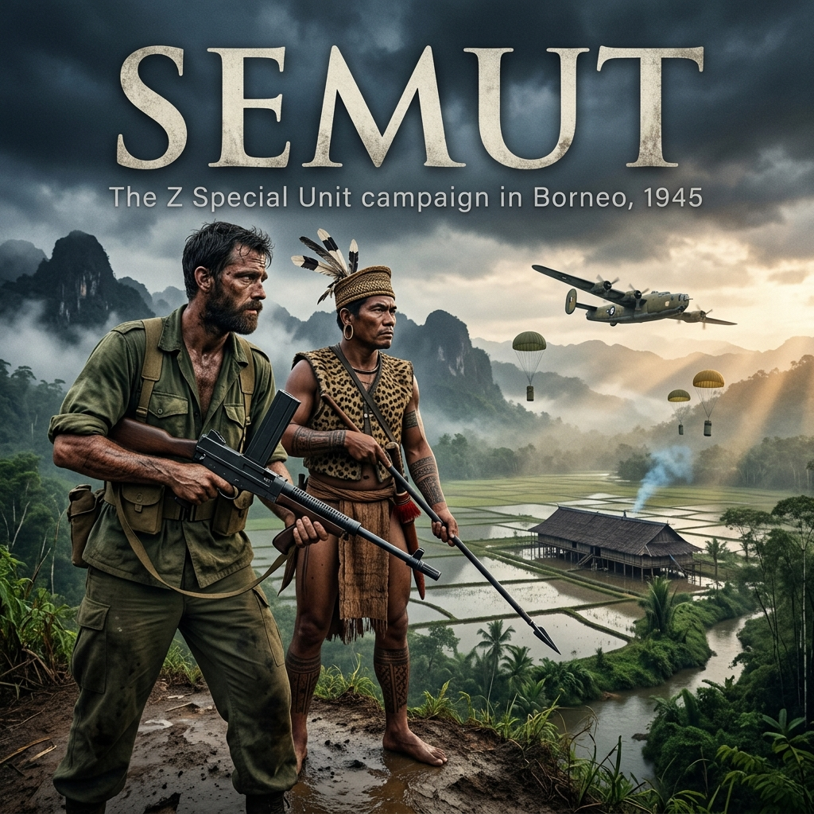

The map pinned to the drafting table at Services Reconnaissance Department headquarters was an assembly of pre-war fragments: a 1912 Dutch colonial boundary survey, maritime charts of the South China Sea, and geological sketch-lines drawn in grease pencil by Shell prospectors before the Japanese invasion of 1941.
Across the center of the island, between the headwaters of the Baram River and the jagged spine of the Tama Abu range, the survey lines broke down entirely. Across hundreds of square miles of the high interior, the cartographers had printed a single admission: Relief largely unknown. Forested plateau; boundaries undefined.
Major Tom Harrisson stood over the sheet, a lighted cigarette between his knuckles. At thirty-three, he was lean, sharp-featured, and carried the restless, erratic energy of a man who treated military conformity with open contempt. Behind him lay an unconventional path: Harrow, Cambridge, ornithological field work in the New Hebrides, the co-founding of Britain's Mass-Observation sociological project, and a commission in the British Army that had eventually seconded him to Australia’s covert operations arm, the Allied Intelligence Bureau.
"The Japanese haven’t touched the plateau," Harrisson said, tapping the blank white paper with his thumbnail. "They hold Kuching, Brunei Bay, the oilfields at Miri, and the coastal river mouths. They have neither the river craft, the stomach, nor the maps to haul three battalions six thousand feet into the moss forest."
Opposite him stood Major G.S. "Toby" Carter. Carter, a New Zealand surveyor and petroleum geologist who had spent years tramping the interior for Sarawak Oilfields Limited, was the operational architect of the mission. Where Harrisson was flamboyant and relied on his memories of the 1932 Oxford University expedition to Mount Dulit, Carter was quiet, deliberate, and knew the actual hydrography of the river basins.
"They don’t need to march into the moss forest to strangle it, Tom," Carter replied evenly. He traced the thin blue line of the Baram River inland from the coast. "The Brooke administration governed the interior through the river forts. If the Japanese hold the lower trading posts at Marudi and Long Akah, the highlands are starved. No kerosene. No matches. Above all, no salt. Cut off the coastal salt, and the interior either submits or wastes away."
The planning room was stifling under the Australian summer. Across the compound, the machinery of the Allied Intelligence Bureau was operating under the immense logistical pressure of the planned Oboe operations. General Douglas MacArthur’s Southwest Pacific command was preparing the Australian I Corps—specifically the 9th Australian Division—for the amphibious assault on Brunei Bay, Labuan, and northern Borneo scheduled for the coming winter.
Between the beaches of Brunei and the interior mountain ranges lay thousands of square miles of trackless rainforest, sheer river gorges, and an enemy whose inland positions were completely unmapped.
Harrisson tapped the blank center again—the Kelabit Highlands, centered on the highland basin called Bario.
"That is why we go straight to the headwaters," Harrisson insisted. "The Kelabits have salt springs in the hills. They have irrigated wet-rice. It is an isolated redoubt. If we drop eight men in by parachute, we build a strip. We distribute modern firearms to the longhouses. By the time the 9th Division lands at Labuan, we don't present them with an empty jungle—we present them with an army of native guerrillas sitting directly across the Japanese escape routes."
Carter adjusted his spectacles and looked at the white void. "No Allied paratroopers have ever dropped into the high interior of Borneo. The RAAF crews have never laid eyes on that valley. They’ll be flying on dead reckoning from Morotai across open water and unmapped cloud decks. If the cloud locks down over the Tama Abu gaps, there is nowhere to divert. You jump blind, or you drop into the canopy."
"Then we jump blind," Harrisson said.
The door swung open, and Captain Eric Edmeades stepped inside. Edmeades, a New Zealander who had served with the 2/1st Pioneer Battalion before being recruited into Z Special Unit, was Harrisson’s designated second-in-command. He was an experienced bushman, quiet and physically solid. Behind him stood Warrant Officer Class II H.J. "Jack" Tredrea, a veteran of the fighting in New Guinea who had been brought in as the mission’s senior medical specialist and field operative.
"The jump roster is confirmed from the staging bay," Edmeades reported, setting a typed personnel manifest on the corner of the table. "Eight men for the initial insertion."
Carter picked up the manifest. The names and operational trades of the Semut I party were fixed:
"What about the transceivers?" Carter asked, looking up at Tredrea. "Did signals clear the second set?"
"We're packing two A3 Mark III sets in the equipment canisters," Tredrea said, his Australian drawl dry and measured. "Bower and Hallam have spent the last three days dipping the wiring looms in shellac to keep the rot out. If the humidity in the Kelabit hills is anything like the Markham Valley in Papua, the moisture will eat the crystals inside three weeks. The hand-crank generators are sealed in rubber bags, but if the canisters smash into rock on the drop, we're deaf and mute."
"They won't smash," Harrisson said, stubbing his cigarette out on the edge of a brass shell-casing ash-tray. "We pack them with wool trade blankets and salt bags."
Harrisson looked across the table at Carter, then at Edmeades and Tredrea.
"Assemble the stores," Harrisson ordered. "We stage through Darwin and Morotai. If the aircraft modifications on the Liberators are finished, we drop before the end of March."
The staging route north through the island chains carried them from Australia through Darwin and Morotai, terminating on 18 March at McGuire Field—an advanced Allied air base carved into the coral and dust at San Jose, on the southwest coast of Mindoro in the Philippines.
At McGuire Field, the heat radiating off the pierced-steel Marston matting was blinding. Dispersed along the revetments stood three heavily modified B-24 Liberators belonging to No. 200 Flight RAAF: A72-191, A72-159, and A72-192.
To prepare the heavy four-engine bombers for clandestine insertion, ground crews had stripped out the heavy Sperry ventral ball turrets. In the open circular well left in the rear fuselage floor, engineers had built a specialized, inclined wooden-and-canvas exit slide—a smooth chute angled down into the slipstream to allow paratroopers to drop clear of the fuselage without snagging static lines. Forward, in the cavernous bomb bays, the standard bomb shackles had been replaced with specialized release gear to drop strings of cylindrical steel supply canisters—the storepedos—each fitted with its own cargo parachute.
For three days, the eight men of Semut I lived out of their canvas kit bags in the staging tents, surrounded by the non-stop roar of 5th Air Force fighters flying interdiction sweeps across Luzon.
The party was divided into two tactical sticks: In the first stick, aboard A72-191: Major Tom Harrisson, Lieutenant Colin Sanderson, Staff Sergeant Doug Bower, and Sergeant Keith Barrie. Accompanying them in the fuselage as jumpmaster and dispatcher was Major Harry Everard Ellis, a British Special Operations Executive officer attached to Z Special Unit.
In the second stick, aboard A72-159: Captain Eric Edmeades, Warrant Officer Class II Jack Tredrea, Warrant Officer Class I Frank Cusack, and Sergeant Kel Hallam.
The first operational sortie took off before dawn on 21 March.
Squadron Leader Harold Graham Pockley, DFC and Bar, commanding No. 200 Flight, lifted A72-191 off the Mindoro runway, paired with Flight Lieutenant Frank Ball piloting A72-159. For five hours, the eight operatives sat wedged in the unheated, roaring fuselages, harnesses cinched over their green jump smocks, Mae West life preservers rubbing raw against their throats.
When the aircraft crossed the northern coast of Sarawak and climbed toward the Tama Abu range, the interior was invisible. A solid bank of white cloud lay packed against the mountain wall from three thousand feet up to twenty thousand, sealing the highland valleys like a tomb.
Pockley circled the dead-reckoning coordinates for forty minutes, hunting for a rift in the overcast. He found nothing. To drop men blind through fifteen thousand feet of zero-visibility mist into a basin ringed by sandstone peaks was suicidal. Pockley banked the bomber north and turned back across the Sulu Sea.
On 22 March, they flew the route a second time.
The result was identical: thick, rolling cloud banks boiling out of the rainforest canopy, completely blanketing the headwaters of the Baram. When the Liberators touched down back on the steel planks of McGuire Field, brake drums smoking, the eight operatives climbed down the crew ladders without speaking. Their uniforms were soaked with sweat and hydraulic oil, their static-line hooks still clipped to the overhead cable.
That evening, Harrisson stood in the blackout briefing hut, leaning over the weather maps with Pockley.
"The cloud builds from midday onward," Harrisson said, his voice taut with frustration. "The coastal air hits the mountain cold front and condenses like steam in a wash-house. If we aren't over the plateau at the crack of dawn, the gap shuts."
"The navigators are flying on magnetic bearings and pre-war trimetrogon aerial strips, Major," Pockley replied, his voice calm, flat, and professional. "There are no radio beacons in Sarawak. If I take two four-engine ships down through solid soup into an uncharted mountain gorge, we'll leave twenty-four men and two aircraft smashed across a razorback ridge."
"We go again," Harrisson insisted.
A violent tropical front grounded all operations across the Sulu Sea on 24 March. The men spent the day inside the tent checking equipment for the third time. They dismantled and re-greased their Owen guns, cleaned the magazines, and re-packed their leg pouches. Each man carried a Colt .45 automatic, an FS fighting knife, emergency field dressings, quinine tablets, a prismatic compass, twenty gold sovereigns sewn into the canvas lining of their waistbands, and a glass ampoule of potassium cyanide sealed in a rubber sheath inside their breast pockets.
At 0100 hours on 25 March, the orderly came through the tent flap with a shaded torch.
The tropical gale had blown itself out; the night sky above Mindoro was clear and filled with stars. Outside the dispersal hut, Pockley and Ball were already running through the final navigation checks with their crews under a shielded inspection lamp.
"Reconnaissance reports thin high cirrus over the sea," Pockley told the gathered men. "The morning mountain fog should hold low to the river bottoms until approximately 0800. We drop as soon as there is enough gray light to distinguish the paddies from the timber."
By 0230 hours, the big Pratt & Whitney Twin Wasp radials were turning over, coughing blue exhaust flames into the dust of McGuire Field.
Harrisson, Sanderson, Bower, and Barrie hauled themselves up through the belly hatch into Pockley’s aircraft, A72-191. Fifty yards away across the hardstand, Edmeades, Tredrea, Cusack, and Hallam climbed into Ball’s aircraft, A72-159.
One behind the other, the two heavy bombers taxied to the seaward end of the strip. Their engines rose to a deafening, full-throttle roar, the airframes vibrating violently against the brakes.
The brakes released. Tires squealing against the perforated steel planking, the Liberators surged down the runway and lifted into the dark, banking southwest toward the unseen mountains of Borneo.
Dawn broke thin and cold across the Sulu Sea. Inside the draughty fuselage of A72-191, the yellow navigation light on the port bulkhead hummed against the steady vibration of the four Twin Wasp engines.
At 0615 hours, the two Liberators crossed the north coast of Sarawak. Through drifting gaps in the coastal stratus, the grey expanse of the sea gave way to mangrove swamps, then to the brown, meandering coils of the lower rivers, and finally to the dense, unbroken mountain rainforest.
In the rear of Pockley’s aircraft, Major Harry Ellis sat beside the inclined wooden exit slide built into the floor where the ball turret had once swung. Major Tom Harrisson, Lieutenant Colin Sanderson, Staff Sergeant Doug Bower, and Sergeant Keith Barrie were wedged along the fuselage wall, bulky in their olive-drab jump suits, their reserve chutes cinched tight across their chests.
A buzzer sounded twice from the cockpit—ten minutes to the drop zone.
Ellis hooked their static lines to the overhead steel cable and checked the pins. "Check equipment!" he shouted over the scream of the wind whistling through the fuselage seams.
The four men checked each other’s harness clips. Each man carried a Colt .45 automatic strapped to his thigh, an FS fighting knife tucked into his boot, and an emergency ration kit in a leg pouch.
The bomber banked sharply. Squadron Leader Pockley was descending through a clean break in the mountain cloud. Outside the waist window, the jagged sandstone cliffs of the Tama Abu range flashed past barely five hundred feet below the wingtips. Then the timbered ridges fell away, opening into a broad, flat highland basin hemmed in by steep hills.
It was Bario.
At 3,500 feet above sea level, the plain lay spread out beneath them: an orderly patchwork of flooded wet-rice fields, clay drainage dikes, and scattered groves of wild bamboo. Along a bend in the river stood the long, dark thatched roofs of two communal longhouses.
A single long buzz tore through the fuselage. The red signal lamp over the floor chute clicked green.
"Go!" Ellis shouted, slapping Harrisson’s shoulder.
Harrisson threw himself feet-first onto the wooden slide. He shot down through the aperture into the freezing slipstream, followed in three-second intervals by Sanderson, Bower, and Barrie.
The 120-knot prop-wash slammed Harrisson backward into the sky. A heartbeat later, the olive-drab static line snapped taut, ripping the canvas pack open. The 28-foot silk canopy whipped out, cracked with the sound of a pistol shot, and blossomed against the highland air.
Harrisson swung beneath the risers. Above him, Pockley’s Liberator was already banking away toward the northern ridge, its engines roaring as it cleared the valley wall. A mile behind it, Flight Lieutenant Ball’s aircraft, A72-159, swept over the center of the plain. Four more chutes tumbled from its belly chute in rapid succession: Captain Eric Edmeades, Warrant Officer Class II Jack Tredrea, Warrant Officer Class I Frank Cusack, and Sergeant Kel Hallam. From the bomber's open bomb bays, cylindrical steel storepedos tumbled into the void, swinging under heavy cargo canopies.
Harrisson hit the ground hard. His jump boots plunged eighteen inches into the sucking, black clay of a flooded paddy. The silk canopy drifted forward over the water, collapsing into a sodden heap.
He fought the quick-release box on his chest, punched it clear, and dragged himself onto a narrow earthen bund. Water was pouring off his webbing. He drew his Colt .45, racked the slide to chamber a .45 ACP round, and knelt in the mud, listening.
The thunder of the two Liberators was already fading northward back toward the Philippine Sea. In their place, an absolute, heavy silence descended over the valley floor—broken only by the wind through the bamboo and the trickle of water through the irrigation cuts.
Two hundred yards to his left, Sanderson and Bower were struggling out of the mud, hauling their wet canopies behind them. Across a wide drainage ditch, WO II Jack Tredrea was clambering out of a buffalo wallow, wiping marsh silt from his face. Further out, WO I Cusack and Sgt Hallam were helping Captain Edmeades onto a dry grass verge.
"Anyone hurt?" Harrisson shouted across the terrace. His voice sounded thin in the open valley.
"Edmeades went into a ditch!" Tredrea yelled back, wading through knee-deep muck. "Sprained his ankle, but the bone's whole! We’re all down!"
The eight men gathered near a low bank of bamboo on the edge of the cultivated fields, rifles unslung, uniforms caked with grey clay.
The valley around them was entirely still. Smoke rose in thin, straight blue threads from the hearth thimbles of the nearest longhouse three hundred yards away, but there was no sound of children, no barking dogs, no movement on the notched log ladders. The deafening roar of eight radial engines screaming across the valley floor had terrified the inhabitants; convinced that the aircraft were Japanese bombers or malevolent sky spirits, the Kelabit had bolted from their homes into the thick secondary scrub of the surrounding hills.
Harrisson lowered his weapon, slid the Colt back into leather, and wiped the sweat from his forehead.
"They’ve bolted into the bush," Harrisson said. "Safety catches on. If we go charging into the longhouse with drawn weapons, we won't see a native between here and the coast."
The mud of the paddy bund was greasy beneath the studs of their jump boots. While WO I Frank Cusack and Sgt Kel Hallam helped Captain Eric Edmeades limp onto a dry patch of river shingle to examine his swollen ankle, Harrisson and Lieutenant Colin Sanderson took stock of the valley.
The storepedos had scattered across half a mile of terrace. One yellow-canopied canister sat half-submerged in a deep buffalo wallow three hundred yards south; two others had plunged into thick fern scrub near the riverbank.
"Sanderson," Harrisson said, slinging his Owen gun behind his shoulder barrel-down. "Leave your weapon with Tredrea. Come with me. Hands out where they can see them."
Sanderson unhitched his webbing and passed his submachine gun to WO II Jack Tredrea. Sanderson knew the interior dialects and spoke fluent Bazaar Malay. He wiped the grey ditch silt from his palms, squared his bush hat, and fell into step behind Harrisson along the narrow clay dike.
The nearest longhouse, the main settlement of Lem Baa, stood three hundred yards off on massive ironwood piles eight feet above the earth, its thatched palm roof stretching the length of two football fields. Beneath the floorbeams, hunting dogs whimpered in the shadows and domestic pigs rooted in the dung-heaps, but the long verandah above was silent.
Fifty yards from the notched log ladder, Harrisson stopped. The smell of woodsmoke and damp thatch hung heavy in the cool morning air.
"Tabeh!" Sanderson called out, pitching his voice so it carried into the dark overhang of the eaves. "Tabeh! Kami kawan! Orang British, orang Australia! Bukan Jepun!"
Greetings! We are friends! British, Australian! Not Japanese!
The valley answered only with the wind rustling the wild banana leaves.
Harrisson took two steps forward, raising his empty hands chest-high. "Tabeh!" he shouted. "Kami mari tolong! Tuan Raja hantar kami!"
We come to help! The Rajah has sent us!
For nearly two minutes, nothing moved.
Then, beneath the stilts of the longhouse near the pig pens, the rattan matting shifted. A head appeared, then another. Two men crept out into the grey light, crouching low against the posts. They were small, broad-chested, clad in bark-cloth loincloths (chawat), their earlobes stretched down to their collarbones by heavy brass rings. In their hands they held eight-foot polished ironwood blowpipes (sumpit), the slender shafts fitted with iron-bladed spear heads bound with rattan.
They did not raise the blowpipes. Their dark eyes darted between Harrisson’s blue eyes, his muddy jungle greens, and Sanderson standing with his hands held wide.
Sanderson spoke again, softly, in slow, measured Malay. "Kami bukan musuh. Kami orang Tuan Raja Brooke. Jepun ada di mana?"
We are not enemies. We are the people of Rajah Brooke. Where are the Japanese?
At the name of the Rajah—Charles Vyner Brooke, whose white administration had governed Sarawak for a century before the disaster of 1941—one of the men slowly stood upright from behind the post. He looked at the sky where the thunderous roar of the Liberators had echoed only twenty minutes earlier, then at the two mud-caked white men standing unarmed on the dike.
"Jepun jauh," the man said, his voice hesitant, pointing a scarred finger down the steep southwestern valley toward the Baram River. "Banyak jauh. Di Long Akah. Di Marudi. Sini... tiada."
The Japanese are far. Very far. At Long Akah. At Marudi. Here... none.
"Bagus," Sanderson said, letting his hands drop slowly to his sides. "Bagus sekali."
The hunter turned and called back into the secondary jungle on the ridge behind the longhouse—a sharp, high-pitched yodel that broke the morning silence.
From the tangled bamboo thickets on the slopes, the response came. Within five minutes, dozens of figures began emerging from the brush: women carrying infants strapped to their chests with bark cloth, old men leaning on bamboo staves, and young boys carrying small parangs. They moved with absolute quiet along the paddy bunds, forming a wide, cautious semicircle around Harrisson and Sanderson.
By mid-morning, the valley’s terror had given way to intense, focused curiosity.
Word had already fled down the tracks toward the neighboring longhouses of Pa’ Umor and Pa’ Main. The sky had dropped white men into the rice fields; they spoke of the Rajah, and they carried no Japanese insignia.
Down near the buffalo wallow, twenty young Kelabit men were already knee-deep in the black mud alongside WO I Cusack and Sgt Barrie, hauling on the parachute shroud lines to drag the three-hundred-pound supply canisters out of the muck.
Near the shingle bank, WO II Jack Tredrea was kneeling beside Captain Edmeades, slicing away the laces of his jump boot with an FS knife to inspect the swelling ankle. A cluster of highland children had gathered ten paces back, watching the Australian soldier with wide eyes. Tredrea looked up, his trained medical eye taking in the weeping, crusted yellow sores of tertiary yaws that disfigured their limbs and faces.
"Look at those lesions, Eric," Tredrea said quietly, strapping Edmeades' joint with a roll of elastic plaster. "Half these youngsters are eaten up with yaws. If the supply canisters didn't smash the ampoules, we've got enough N.A.B. in the crates to clear every sore on this plateau."
Harrisson walked back along the bund, his boots squelching in the mud. He stopped beside Staff Sergeant Doug Bower and Sergeant Kel Hallam, who were unlashing the heavy wooden crates containing the A3 Mark III transceiver and the dry-cell accumulators.
The sky to the east was darkening rapidly; the high, jagged peaks of the Tama Abu range were already vanishing behind a bruised wall of afternoon storm clouds.
"Get the set up to the longhouse verandah, Bower," Harrisson ordered, looking at his watch. "The rain will be down off the peaks in an hour. If that aerial isn't up before five o'clock, Morotai will assume we went into the trees with Pockley."
The mountain storm broke over the Bario basin shortly after 1530 hours, turning the cleared paths into troughs of liquid red clay and drumming against the palm-thatch roof of the Lem Baa longhouse with the deafening roar of falling gravel.
On the covered outer verandah, sheltered from the driving spray by woven bamboo mats, Staff Sergeant Doug Bower knelt beside the open steel case of the A3 Mark III transceiver. Beside him, Sergeant Kel Hallam laid out the dry-cell accumulators, checking each lead with a pocket voltmeter.
WO I Frank Cusack and Sgt Keith Barrie had hauled the stores inside. Sacks of rock salt, tins of twist tobacco, and crated Bren-gun magazines were stacked against the inner partition wall, where two dozen Kelabit men sat silently on split-rattan mats, watching the Australians through the haze of resin torches and woodsmoke.
"What's the terminal voltage on the wet cells, Kel?" Bower asked, squinting against the gloom.
"Ninety-two volts across the high-tension plate," Hallam replied, carefully seating an insulated spade connector onto the brass terminal post. "Lead wires are dry. Cusack did a proper job with the wax seals on the canisters."
Outside, forty feet above the mud, WO II Jack Tredrea and Lieutenant Colin Sanderson stood in the deluge, guiding a twenty-foot bamboo pole up against the corner post of the longhouse. At its tip, insulated by a glazed porcelain ring, was the hundred-foot length of stranded copper wire that served as the half-wave aerial. Cusack hauled the guy-ropes taut and lashed them to the ironwood house piles.
Water streamed down Tredrea’s neck and into his shirt as he climbed back up the notched log ladder into the shelter of the verandah. He wrung out his slouch hat and walked over to where Major Harrisson stood pacing the floorboards.
"Aerial is clear of the thatched eaves," Tredrea reported, wiping rain from his face with the back of his hand. "It has thirty feet of elevation facing east toward the Celebes Sea."
Harrisson looked at his pocket watch. It was 1645 hours.
"Bower," Harrisson said. "The schedule is seventeen-hundred. Advanced HQ at Morotai will be listening for exactly twenty minutes. If we don’t hit the window, they won't open the frequency again until zero-six-hundred tomorrow."
Bower slid the heavy bakelite headphones over his ears and flipped the main toggle switch on the A3's control face.
Inside the metal casing, three miniature glass vacuum valves warmed to life, casting a faint, amber filament glow through the ventilation louvers.
Several of the Kelabit elders seated ten paces away leaned forward, murmuring in low voices. To men whose only sources of nocturnal light were dried dammar-pitch torches and open hearth fires, the tiny glass tubes burning inside an iron box without smoke or spark were mesmerizing.
Bower turned the vernier dial, listening to the headphones.
The headphones did not produce quiet. They roared with the chaotic, tearing sound of equatorial static—the electrical discharge of a dozen tropical storms raging between Borneo and the Moluccas. Bower’s jaw tightened as he worked the fine-tuner, trying to carve through the noise floor to find the base-station crystal frequency.
Hallam opened the silk code pad on an empty ration crate, keeping the pencil dry beneath his forearm.
At 1658 hours, Bower screwed the knurled knob of the brass Morse key down against its spring. He adjusted the gap with a fingernail, dipped the key twice to test the side-tone, and began sending their designated operational callsign into the air:
DIT-DIT-DAH-DIT... DAH-DAH-DIT...
He punched out the five-letter cipher groups with steady, rhythmic taps of his wrist.
The message was brief, stripped of any ornamentation: SEMUT ONE TO ADVANCED BASE. INSERTION COMPLETE. ALL EIGHT DOWN BARIO BASIN. LOCAL POPULATION FRIENDLY. STORES RECOVERED. STANDING BY FOR SCHEDULE TWO.
Bower snapped the toggle from TRANSMIT to RECEIVE.
The longhouse fell completely still. Even the hunting dogs beneath the floorboards seemed to quiet as the rain began to slacken into a heavy highland mist. Harrisson, Edmeades, Tredrea, and Sanderson stood motionless, their eyes fixed on the headphones clamped over Bower’s ears.
For two minutes, there was only the dry, rushing roar of atmospheric interference.
Then Bower reached for his pencil.
Without taking his eyes off the frequency dial, his right hand began scrawling five-letter groups across the yellow signals pad:
DAH-DIT-DAH-DIT... DIT-DIT-DAH...
Hallam leaned over Bower’s shoulder, cross-referencing the incoming groups against the silk one-time pad. His pencil decoded the letters directly beneath the cipher:
ADVANCED BASE TO SEMUT ONE. RECEIPT ACKNOWLEDGED. CONGRATULATIONS. MAINTAIN DAILY SCHEDULES 0600 AND 1800. WATCH FOR STORE DROPS.
Bower tapped the key twice to acknowledge receipt, flipped the master switch to OFF, and pulled the headphones down around his neck. The amber filaments inside the valves slowly dimmed and went black.
"We're on the air, Major," Bower said, rubbing his eyes. "Morotai has us."
Harrisson took a slow, deep breath, letting the tension leave his shoulders. For the first time since their Liberator had cleared the Philippine coast twelve hours earlier, the isolated stick of eight men was tethered to Allied Command.
Outside, the darkness had fallen swiftly over the valley, wrapping the mountains in dense fog.
Down the longhouse corridor, the thud of bare feet on the ironwood planks broke the silence. Two Kelabit runners, their loincloths soaked and their legs splattered with yellow trail mud, stepped onto the verandah. They had run ten miles over the mountain tracks from Pa' Main.
Lieutenant Sanderson stepped forward to meet them. The lead runner spoke in quick, gasping sentences, gesturing with his arm back toward the southeastern ridges.
Sanderson listened, then turned back to Harrisson and Tredrea.
"The paramount chief has received the message," Sanderson said quietly. "Penghulu Lawai Bisara is on the trail. He will be in the longhouse before midnight."
Night on the highland plateau brought a sudden, biting cold. At over three thousand feet, the tropical heat vanished with the dusk, replaced by a damp chill that rolled off the moss-draped peaks of the Tama Abu range.
Inside the great communal longhouse at Lem Baa, pitch-resin torches spluttered in bamboo wall-brackets along the central aisle. The building was an unbroken expanse of ironwood and split bamboo, over two hundred yards long, sheltering dozens of family hearths. Smoke from the open fire-boxes hung in a thick, blue-grey strata beneath the thatched roof, keeping the sandflies down and curing the bundles of seed rice stacked in the loft poles above.
Major Tom Harrisson sat cross-legged on a woven rattan mat, wrapped in an issue wool blanket. Beside him, Lieutenant Colin Sanderson, WO II Jack Tredrea, and Captain Eric Edmeades—his injured ankle freshly bound in clean crepe bandage—drank boiled rainwater from hollowed bamboo tubes. Further down the verandah, WO I Cusack, Sgt Barrie, and the two signallers, S/Sgt Bower and Sgt Hallam, rested near the equipment canisters, their Owen guns within arm's reach.
Shortly before midnight, the heavy notched log ladder at the eastern entrance thumped under the weight of incoming climbers.
A party of men filed onto the verandah, their bare skin glistening with cold drizzle. At their head walked Penghulu Lawai Bisara, the paramount chief of the Kelabit people. He was a broad-shouldered man of late middle age, his calves and thighs covered in dense geometric tattoos. His earlobes, distended since childhood by heavy brass rings, hung low toward his collarbones, and from his rattan belt swung a parang ilang sheathed in carved wood bound with hair.
The villagers gathered in the shadows fell silent. Bisara walked with measured, unhurried steps across the springy bamboo floor and stopped before Harrisson.
Sanderson leaned close to Harrisson’s ear, listening to the murmurs of the elders.
Bisara did not immediately speak. He reached into a small woven pouch slung across his chest, took out a thin slip of folded paper wrapped in oiled bark cloth, and extended it across the hearth.
Harrisson took the sheet and held it toward the flare of a resin torch. It was an official letter of appointment from the Brooke government, bearing the pre-war seal of the Third White Rajah, Charles Vyner Brooke: Penghulu Lawai Bisara, Upper Baram.
Harrisson looked up, handing the paper back. He addressed the chief in Bazaar Malay, pausing between phrases so Sanderson could ensure every meaning held clear in the highland dialect.
"The Rajah lives," Harrisson said. "The Japanese told you the white men were finished. It was a lie. The Australian Army and the British Army are retaking the islands. Soon, thousands of soldiers will land on the beaches of Brunei and Labuan."
Bisara sat down slowly, his dark eyes studying Harrisson’s face, then shifting to Edmeades’ strapped boot and Tredrea’s medical panniers.
"For three years, no white man came," Bisara replied in low, deliberate Malay. "The Japanese came up the river. They took our shotguns. They took our iron pots. Downriver, they took the buffalo. If the Japanese find you here, they will march up from Long Akah. They will burn this house. They will kill our women."
"They will not burn this house," Harrisson countered. "We did not drop from the clouds to hide in the scrub. The big four-engine planes will return. They will drop modern firearms, shotguns, and ammunition for every man who can walk a ridge. We will block the rivers. But we need to know what lies between here and the coast."
Bisara nodded slowly toward the southern mountains. "At Long Akah, on the Baram, there is a Japanese post. Sometimes fifteen men, sometimes twenty. At Long San, Catholic fathers are locked up. Downriver, at Marudi, there are more. And south, across the border at Long Nawang..."
The chief paused. The memory of Long Nawang was notorious throughout the interior: in 1942, Japanese troops had marched into the Dutch outpost there and systematically executed the surrendered Dutch garrison, civilian administrators, women, and children.
"If we take up weapons," Bisara said, "we cannot stop until the Japanese are dead. If one lives, he will lead them back to us."
He looked past Harrisson to WO II Jack Tredrea, whose sleeves were rolled high, his arms bearing the yellow stains of disinfectant.
"The people say your medicine man has the needle," Bisara said. "My brother's children are rotting with the sores. Can he stop the flesh from dying?"
Sanderson translated the chief’s words.
Tredrea leaned forward across the mat. "Tell him yes," Tredrea said quietly. "Tell him it is the needle of the Brooke government. It kills the yaws in two days."
Sanderson relayed the promise: "Tomorrow morning, at sunrise, bring the sick children to the open ground by the stream. Tuan Obat will treat them all."
Bisara sat in silence for a long time, the firelight catching the bone ornaments at his neck. Around the longhouse, hundreds of his people watched from the hearth partitions, waiting for the chief's decision.
Finally, Bisara reached into his pouch, took out a dry banana leaf, and pinched a small roll of shredded highland tobacco into it. He rolled it between his calloused palms and passed it to Harrisson.
"If the needles cure the children," Bisara said, "my men will carry your loads. We will clear the rice fields for your planes. And we will put eyes on every trail to Long Akah."
At dawn on 26 March, a dense white fog hung two feet above the flooded paddies, slowly burning off as the highland sun climbed over the Tama Abu range.
WO II Jack Tredrea set up his field dispensary on a pair of upturned ammunition boxes beside a shallow gravel creek fifty yards from the Lem Baa longhouse. Beside him, WO I Frank Cusack laid out the medical stores saved from the dry canisters: an enamel instrument tray, glass syringes, spare hypodermic needles soaking in methylated spirit, rolls of cotton gauze, and boxes of ampoules containing Novarsenobillon—N.A.B., the neoarsphenamine arsenic compound used specifically to eradicate yaws.
A silent crowd had already gathered along the earthen bunds. Dozens of Kelabit mothers stood in the damp grass, holding infants and young children whose bodies were disfigured by weeping, yellow-crusted lesions.
Lieutenant Colin Sanderson stood beside the crate to interpret. "Keep them steady," Sanderson told the first father in the line. "Tell the boy not to thrash."
Tredrea snapped the glass neck of an ampoule, drew sterile water from a boiled canteen, and shook the syringe until the yellow powder dissolved completely. He swabbed the child's buttock with methylated spirit, pinched the flesh, and slid the needle into the muscle. The boy flinched, let out a sharp cry, and buried his face in his mother's bark-cloth vest.
"Finished," Tredrea said, dropping the needle back into the spirit bath to sterilize it for the next patient. "Next."
He worked methodically through the morning chill, his fingers steady despite the biting cold of the mountain water. Over forty injections were administered before noon. For tropical ulcers that had chewed through the skin to expose the shin bones, Tredrea sprinkled white M&B sulphonamide powder and bound the limbs in clean gauze. The smell of carbolic acid, boiled river water, and raw infection hung heavy over the creek bank.
Across the cleared ground near the longhouse piles, S/Sgt Doug Bower and Sgt Kel Hallam were operating the A3 Mark III transceiver under a shelter of wild banana leaves. The dry-cell accumulators hummed faintly as Bower adjusted the headphone band.
Major Tom Harrisson walked over, an unlit cigarette between his lips, holding a grease pencil and a blank message pad. Captain Eric Edmeades sat nearby on a split log, his sprained ankle elevated on a roll of parachute canvas.
"Have they acknowledged the morning schedule?" Harrisson asked.
"Signal incoming now, Major," Bower said, his right hand already scribbling five-letter cipher groups across the pad.
Hallam leaned over the paper, holding the silk one-time pad flat against a wooden board, decoding each group as it arrived. As Hallam worked down the third line, his pencil stopped. He looked up at Bower, then at Harrisson.
"What is it, Hallam?" Harrisson demanded.
Hallam handed the decoded slip to Edmeades, who read it aloud in a quiet, flat voice:
ADVANCED BASE TO SEMUT ONE. 200 FLIGHT LIBERATOR A72-191 OVERDUE FROM INSERTION SORTIE. FAILED TO RETURN TO MINDORO OR MOROTAI. SEARCH PATROLS DISPATCHED SULU SEA AND NORTHWEST BORNEO COAST. PRESUMED LOST WITH ALL HANDS.
The clearing around the radio shelter went entirely still.
Squadron Leader Harold Pockley, his ten RAAF crewmen, and Major Harry Ellis—the British SOE officer who had slapped Harrisson’s shoulder at the fuselage slide twenty-four hours earlier—were gone. Somewhere along the thousand-mile flight path between the Sarawak mountains and the Philippine bases, the heavy bomber had vanished into the ocean.
Harrisson took the slip from Edmeades’ hand, stared at the penciled letters, then crushed the paper into his pocket.
"Ellis was one of the few men at headquarters who understood irregular operations," Harrisson said quietly.
"It cuts 200 Flight’s long-range strength," Edmeades said, looking at the sky. "Base is going to be exceptionally careful about sending further sorties over these peaks if they think flak or weather took Pockley."
Tredrea walked across the clearing from the creek, drying his hands on a rough piece of toweling. He looked at the faces around the radio set. "What's happened?"
"Pockley's aircraft didn't make it back," Harrisson told him bluntly. "Ellis is dead. All twelve of them."
Tredrea stood motionless, his eyes drifting out toward the valley floor. "They gave us a clean drop. Without them, we wouldn't be standing on this plateau."
Harrisson turned toward the longhouse. Penghulu Lawai Bisara had walked down the log ladder and was standing at the edge of the clearing, watching the medical line. Several of the children who had received the N.A.B. injections early that morning were already resting quietly beside the hearth fires; the excruciating pain of the active spirochetes was beginning to subside as the drug took effect.
Bisara approached the Australians, his dark eyes taking in the grim expressions of the white men.
"Tuan," Bisara asked Sanderson. "Ada berita buruk?"
Is there bad news?
"The iron bird that brought us here fell into the great water on its way home," Sanderson translated quietly. "The men who flew it are dead."
Bisara looked up at the empty sky above the valley, then back at Harrisson. "They brought you to us," the chief said in Malay. "Their spirits will walk the high ridges of the Tama Abu."
He gestured with his arm across the wide basin of wet-rice terraces, where water buffalo grazed on the flooded bunds.
"If the iron birds cannot land on the water," Bisara said, "we will give them earth. My people have talked. We will drain the fields. We will cut the dikes. We will make a road long enough for the great birds to land on their wheels."
Harrisson looked at the vast, muddy valley floor. An airstrip at Bario would change everything: it would allow supply transports to land directly, bring in heavy equipment, and provide an extraction route for casualties.
"Tell the Penghulu," Harrisson told Sanderson, "that every man who works on the strip will receive a tin of salt and tobacco every three days. We begin tomorrow."
At dawn on 27 March, the valley floor between Lem Baa and Pa’ Umor became a vast earthworks camp.
Under the authority of Penghulu Lawai Bisara and the village elders, more than five hundred Kelabits—men, women, and older children—assembled along the irrigation lines. They carried hardwood digging sticks, broad iron hoe-blades (belung), and woven rattan baskets. Working knee-deep in the grey highland clay, they breached the ancestral mud dikes that had held the wet-rice paddies for generations, directing the standing water into the perimeter creeks.
Captain Eric Edmeades, leaning on a cut ironwood staff to take the weight off his strapped ankle, paced the alignment with WO I Frank Cusack. Using a prismatic compass, they marked out an emergency drop zone and future landing strip eight hundred yards long, oriented north-northeast to catch the morning breeze sweeping off the Tama Abu range.
"They're taking out a hundred yards of terrace dikes a day with bare hands," Cusack remarked, watching lines of women haul baskets of clay up the drainage banks with bark-cloth head-straps.
"Because they know what happens if the Japanese march up the Baram," Edmeades replied. "And because of the salt."
The trade economics of the interior were absolute. Cut off from coastal shipping for over three years, the highland longhouses were starved of mineral salt, kerosene, and cloth. WO I Cusack and Sgt Keith Barrie managed the ration ledger from empty ammunition crates under the Lem Baa verandah. Every worker received a measured bamboo cylinder of coarse grey rock salt and a twist of Virginia dark leaf for three days’ labor.
Every seventy-two hours, 200 Flight RAAF continued the air link. Heavy Liberators braved the morning weather fronts over the ridges, kicking out strings of cylindrical steel storepedos under cargo chutes. Along with crates of Winchester Model 94 lever-action carbines, Browning 12-gauge automatic shotguns, and canvas bandoliers of heavy buckshot, the canisters brought friction-top tins of rock salt, bolts of black drill cloth, and bags of silver Straits dollars.
S/Sgt Doug Bower and Sgt Kel Hallam manned the A3 transceiver twice daily, clearing delivery manifests with Advanced Base Morotai and relaying intelligence gathered from Tredrea's growing network of runners.
By the second week of April, the central rice terrace was dry. Hundreds of bare feet, accompanied by heavy water buffalo driven back and forth in teams, had compacted the clay into an eight-hundred-yard runway. It was rutted and soft in the rain, but the obstacles were gone.
At 0845 hours on 16 April, the deep drone of heavy aircraft echoed across the valley.
Bower stepped out from the radio lean-to, pointing northeast. "Two ships! High altitude!"
Two silver B-24 Liberators broke through the broken cloud deck at fifteen hundred feet. Sweeping over the freshly leveled strip, their ventral fuselage chutes opened, followed immediately by the release of equipment canisters from the bomb bays.
Canopies blossomed: seven paratroopers tumbled into the mountain air, descending onto the cleared clay beside the drainage dikes.
Harrisson, Sanderson, and Tredrea ran across the packed earth as the jumpers touched down.
The lead jumper landed smoothly on the dry verge, rolled, collapsed his olive silk, and unclipped his harness. It was Major G.S. "Toby" Carter.
Carter pushed back his jump helmet, his lean face beaded with sweat. He unslung his Owen gun and shook Harrisson’s hand firmly.
"Good to see you on the ground, Tom," Carter said quietly. "We took the signals on Morotai. Pockley's aircraft?"
"Gone without a trace," Harrisson said. "Twelve men. But the plateau is secure. The strip is leveled, and we have the headmen organized from here to the border."
Behind Carter, the other six men of the Semut II party were gathering their gear from the mud: Captain W.L.P. "Bill" Sochon, a veteran of the Sarawak civil service and police force; WO II Donald "Shorty" Horsnell; Sergeant Bertram "Bob" Long; Sergeant C.W. "Wally" Pare; Sergeant The Soen Hin; and Sergeant Abu Kassim, an Australian soldier of Malay descent whose fluent speech was immediately understood by the watching highland scouts.
Carter picked up his map case and looked down the long southwestern defile where the mountain drainage dropped steeply toward the Baram River basin.
"You run the Highlands, Tom," Carter said, his voice measured and devoid of Harrisson's theatrical flair. "Semut II belongs on the river. The Japanese garrison at Long Akah is forty miles down that track, sitting astride the main route between the interior and the coast. If they move upriver, they choke Bario. If we move down, we cut their communications."
"You'll need thirty Kelabit porters to get those battery crates through the gorges," Harrisson noted. "The mountain tracks are knee-deep in clay."
"Bisara will find the men," Carter replied. "We sort the ammunition canisters tonight, and my party moves down into the Baram at dawn."
On the morning of 19 April, the descent from the Bario plateau began.
Major Toby Carter’s column formed up on the southern perimeter of the cleared strip, where the cool highland clay dropped away into the steep, rain-slicked defiles of the upper Baram. Behind Carter walked Captain Bill Sochon, WO II Donald "Shorty" Horsnell, Sergeants Bob Long and Wally Pare, and the two Asian operatives, Sergeant The Soen Hin and Sergeant Abu Kassim.
To maintain continuous wireless communication as the river advance widened, Carter also took Sergeant Kel Hallam for telegraphy and Sergeant Keith Barrie for terrain surveying. Forty Kelabit porters, arranged through Penghulu Lawai Bisara, shouldered the baggage: waterproof metal battery canisters, charging engines, crates of ammunition, and trade salt, all slung from split-rattan tumplines pressed against their foreheads.
Harrisson stood on the edge of the terrace with Captain Eric Edmeades, watching the porters test the lashings of their baskets.
"Keep off the river flats until you hit the lower reaches," Harrisson told Carter. "The Japanese have Kenyah informers between Long Akah and Marudi. If they catch you strung out on a gravel spit, they’ll bottle you up before you see open water."
Carter adjusted the canvas sling of his Owen gun. His New Zealand cadence was steady, unhurried. "The Kenyah aren't Japanese informers, Tom," Carter replied. "They're hungry. They’ve had three years of isolation, just like the people up here. Once we open the supply drops at Long Akah, they’ll come over to us."
Carter gave a short signal with his hand and turned south into the dripping ferns. Within fifty yards, the column vanished into the mountain mist, the soft thud of their boots swallowed by the roar of the headwater cataracts.
At Bario, the remaining party settled into the permanent routine of a forward guerrilla depot.
Harrisson divided operational duties among the three European personnel who stayed behind on the plateau: Captain Eric Edmeades, WO I Frank Cusack, and S/Sgt Doug Bower, alongside Lieutenant Colin Sanderson who coordinated local intelligence.
With his sprained ankle sufficiently recovered, Edmeades took command of native recruit training. On the eastern terrace, where a sandstone cliff provided a natural backstop, Edmeades and WO I Cusack established a weapons range.
Every morning, fifty to sixty Kelabit men gathered along the dikes. Most had handled blowpipes and iron spears from childhood, but modern breech-loading mechanisms were foreign to them. The crated shipments from 200 Flight had delivered hundreds of American 12-gauge shotguns—both Browning semi-automatics and single-barrel break-actions—along with Winchester Model 94 lever-action carbines and British .303 Lee-Enfields.
Edmeades stood beside an empty ammunition crate, holding up a heavy brass-rimmed shotgun cartridge.
"Tengok sini," Edmeades said in functional Malay, demonstrating the break-action with an empty shotgun. "Jangan tarik ke atas. Tembak rendah."
Look here. Do not jerk upward. Shoot low.
Accustomed to antique black-powder muzzle-loaders that had long ignition delays, the highlanders had an ingrained habit of flinching and pulling their shoulders back in anticipation of the kick. When firing modern smokeless 12-gauge buckshot, this drove the muzzles skyward, shredding wild banana trees twenty feet overhead while leaving the target stakes untouched.
WO I Cusack walked the line, manually correcting their stances. He placed a heavy hand on a young recruit's shoulder, levering him forward over his front foot. "Low, mate," Cusack muttered in his flat Australian drawl. "Keep your weight over your knees. You pull that trigger, the buckshot does the work. You don't have to push it."
The recruits quickly abandoned interest in the bolt-action Lee-Enfields. The long military rifles were unwieldy in thick scrub, and the .303 full-metal-jacket round punched clean, narrow holes through foliage without immediate stopping power. But the 12-gauge shotgun was devastating. A single spread of heavy lead pellets ripped through dense bamboo like a scythe, matching their traditional hunting ambush ranges perfectly.
At the western end of the longhouse verandah, WO II Jack Tredrea was preparing his own field patrol.
His medical work had established total authority across the northern settlements, but the eastern and southern approaches remained completely unmapped by Allied intelligence. Tredrea unrolled a linen-backed map on an empty tea chest. Beside him stood five Kelabit scouts carrying light bamboo back-baskets, parangs, and blowpipes with gourds of fresh tajem poison sap.
Harrisson walked over from the signals hut, his shirt stained with battery acid. "You're moving today?"
"If we sit here waiting for runners, we’ll be reacting to rumors," Tredrea said, checking the feed-lips of three spare Owen gun magazines. "I’m taking these five scouts east across the Tama Abu spine. I want eyes on the tracks toward the Limbang and Trusan rivers, and I want to see what the Japanese are doing along the border with Dutch Borneo. Five weeks on foot. I'll visit every longhouse in the upper valleys."
"Take two hundred silver dollars and twenty tins of salt," Harrisson ordered, handing over a canvas haversack. "Don't engage garrisons. If you find outposts, map their strength, recruit the headmen, leave medical supplies, and send runners back to Bower."
Tredrea nodded. He slid his field dressing and rubber-wrapped cyanide ampoule into his left breast pocket, buttoned the flap, and slung his pack.
At 1100 hours, Tredrea and his five Kelabit companions stepped off the edge of the plateau, climbing eastward into the dense cloud forest of the high ranges.
Left behind at the Lem Baa signals post, S/Sgt Doug Bower sat at the A3 transceiver, headphones clamped over his ears, listening to the crackle of Morotai while forty miles to the southwest, Carter’s column plunged deeper into the gorges of the Baram.
The descent from the Bario plateau into the upper Baram took Toby Carter’s column through twelve days of continuous, torrential downpours.
Below three thousand feet, the cool highland air gave way to the suffocating heat of the low river valleys. The red clay tracks were slick chutes of mud laced with exposed roots that tore the soles off the Australians' issue boots. Leeches pushed through the eyelets of their footwear in clusters, while swarms of sweat-bees coated every exposed patch of neck and forearm.
By the first week of May, Semut II reached the confluence where the Akah River emptied its silt into the broad brown torrent of the main Baram.
Perched on a high clay bluff overlooking the junction stood Fort Long Akah. Built during the reign of the Brooke Rajahs to suppress tribal feuds and regulate river trade, it was a two-storey stockade built entirely of square-hewn belian—Borneo ironwood—impervious to weather, insects, and rifle fire.
The post was empty. The Japanese garrison that had periodically occupied the station had withdrawn downriver toward the fortified telegraph post at Long Lama and the coastal base at Marudi, leaving the fort in the hands of native river constables whose allegiance had dissolved in the absence of coastal supervision.
Carter, hollowed out by a sharp bout of dysentery on the trail, stood on the gravel beach below the bluff with Captain Bill Sochon. Behind them, Sergeants Bob Long and Wally Pare kept their Owen guns cocked and covered the bamboo thickets along the bank, while Sergeant Abu Kassim called up the bluff in fluent Malay, hailing the local Kenyah elders down to the water.
The reoccupation of the station was bloodless.
Within forty-eight hours, Fort Long Akah became the operational headquarters of Semut II. Kenyah and Kayan rivermen, alienated by three years of Japanese rice requisitions, brought their long dugout canoes (perahu) into the fort’s landing stage. Carter wasted no time establishing river blocks: heavy wild rattan cables were winched across the Baram from ironwood trunks, covered by concealed rifle pits armed with Browning automatic shotguns and 12-gauge solid slugs. No boat could pass up or down the river without inspection.
In the upper blockhouse of the fort, where oil lamps hung from the rafters, Captain Bill Sochon set a thick plank of seasoned belian across two benches. With a mallet and wood-chisel, he began carving deep, clean block letters into the ironwood to record the retaking of the first government station in Sarawak by Allied arms:
MAJOR G.S. CARTER. CAPT. W.L.P. SOCHON. W.O. II D.L. HORSNELL. SGTS. C.W. PARE, K.W. HALLAM, J.K. BARRIE, THE SOEN HIN, ABU KASSIM. ALLIED INTELLIGENCE BUREAU. MAY 1945.
Carter walked up the timber steps into the lamp-lit room, shaking rainwater from his bush hat. He looked down at the newly carved timber, then leaned over the table where Sergeant Kel Hallam was transcribing an encrypted signal received from Advanced Base Morotai.
"Headquarters has approved the southern boundary, Bill," Carter told Sochon. "The 9th Division’s landing at Brunei Bay is set for early June. The Baram is sealed, but the Batang Rajang is wide open. If the Japanese at Sibu or Kapit realize what we’ve done at Long Akah, they can send three hundred men upriver to Belaga and roll us up from the south."
Sochon blew the wood chips from the carved plaque. As a pre-war Sarawak civil officer, he knew the Rajang basin intimately.
"The middle Rajang is Iban country," Sochon said. "They remember the Rajah, but they've been isolated for three years. Last year the Japanese executed six men at Kapit for owning radio parts. If an Allied officer doesn't show up in Belaga with weapons and trade goods, the downriver chiefs won't move."
"You won't get air-drops until you reach the main river at Belaga," Carter warned. "Between here and the Rajang headwaters is the watershed divide—limestone cliffs, trackless gorges, and rivers choked with boulders. You'll have to walk the ridge on foot."
"I know the tracks, Toby," Sochon answered. "Give me Keith Barrie for surveying and wireless, and give me Abu Kassim. Abu knows how to speak to the Kayan headmen without triggering an insult."
On the morning of 21 May, Semut III officially detached from Carter’s command.
On the shingle spit below Fort Long Akah, Sochon, Sergeant Keith Barrie, and Sergeant Abu Kassim loaded two slender river canoes with their field kit, compasses, three tins of rock salt, and their personal weapons. Carter, Horsnell, Bob Long, Wally Pare, Hallam, and The Soen Hin stood on the bank to see them off.
There were no military ceremonies. The men shook hands in the morning mist, aware that with Japanese river patrols active on both watersheds, they were stepping into country with no immediate extraction route.
Sochon stepped into the lead canoe. The Kenyah paddlers dug their broad ironwood blades into the brown current, turning the bows south toward the mouth of the Dapoi and the jagged, unexplored mountain spine that guarded the headwaters of the Batang Rajang.
The ascent out of the Baram basin into the jagged watershed dividing northern Sarawak from the Batang Rajang was an unbroken sequence of boulder chokes, torrential rainstorms, and vertical clay chutes.
For four days after leaving Fort Long Akah, Captain Bill Sochon, Sergeant Keith Barrie, and Sergeant Abu Kassim worked their two narrow dugouts against the swollen current of the Dapoi. Where the river narrowed into limestone gorges, the Kenyah boatmen stepped into chest-deep torrents, hauling the craft over slick gravel ledges with twisted wild vines. Water filled the bottoms of the canoes faster than Abu Kassim could bail with an enamel mess-tin, soaking their canvas packs and threatening the rubberized cases containing their spare ammunition and signals code sheets.
When the river ceased to be navigable even for the shallowest dugouts, the rivermen dragged the canoes into a hidden creek mouth and masked them with cut wild ferns. The porters hoisted the tumplines onto their foreheads: seventy-pound loads of trade salt, tinned tobacco, survey equipment, and the heavy dry-cell accumulators Barrie carried for their future wireless link.
The march across the razorback ridge of the central divide was merciless.
At four thousand feet, the rainforest turned into dripping, tangled moss forest. The trees were stunted, their trunks wrapped in thick sponges of sodden moss that hid deep crevasses between jagged limestone boulders. Every step through the rotting leaf-mold was a trap; boots punched through moss into knee-deep voids, tearing shins against razor-sharp rock. Swarms of black mountain leeches penetrated their puttees and issue wool socks, gorging until blood pooled in the soles of their boots and ran down the laces.
Sochon drove the column forward without pause. Behind him, Barrie breathed in ragged gasps, his surveyor's compass case thumping against his ribs. Abu Kassim walked near the middle of the file, his carbine slung barrel-down beneath his arm, his eyes scanning the dense undergrowth for the trip-strings of native pig-traps or Japanese patrol markers.
The danger was not merely the terrain. As they crested the spine and looked down into the vast, mist-shrouded green basin of the Balui—the upper reaches of the great Batang Rajang—both Sochon and Barrie knew the gamble they were taking.
The Japanese military administration in Kuching and Sibu had placed a standing price of five thousand Straits dollars on the head of any white officer captured or killed in the interior. To an inland headman whose village had seen neither cloth nor salt for three years, five thousand dollars was a king's ransom.
"If the downriver chiefs decide the Japanese are going to win the coast," Barrie said quietly during a halt on a wet limestone slab, scraping three bloated leeches off his ankle with the edge of his fighting knife, "our heads will be in smoke baskets before we reach Kapit."
"Penghulu Oyong Puso knows me, Keith," Sochon replied, his voice raspy from mountain chill. He wiped the mist from his compass glass. "He knows the Brooke flag. But we don't walk into Belaga unannounced. A white face appearing out of the bush will cause a panic, and when natives panic, spears fly before questions are asked."
Two days down the southern slopes, at the headwaters of the Belaga River, Sochon halted the porters in a bamboo thicket. He sent a trusted Kenyah scout ahead on the trail, bearing a verbal message for Penghulu Oyong Puso, the paramount Kayan chief of the upper district: Tuan Sochon has returned. He comes from the sky with weapons and the authority of the Rajah.
On 28 May, the column reached the first scattered farm huts of Ulu Belaga.
The river here widened to seventy-five yards, swollen yellow-brown by afternoon thunderstorms. On the opposite bank stood a timber rest house. Waiting near the gravel landing were two figures dressed in faded cotton trousers and sun-bleached shirts.
Abu Kassim kept his hand near the bolt of his rifle as the canoe drifted toward the bank.
The two men stepped down to the water's edge. One was a native Malay clerk named Awang Amat, a former Brooke government official who had maintained the district records in secret throughout the occupation. Beside him stood a young Eurasian man, gaunt, hollow-cheeked, and dressed in rags: Tom Crocker.
Crocker was the son of one of Sarawak's pre-war British Chief Secretaries. Trapped by the Japanese invasion in 1941, he had been held under house arrest in Belaga and forced to labor in the Japanese timber-cutting camps along the riverbanks. His skin was yellowed with chronic malaria, his forearms scarred by insect bites.
"Sochon?" Crocker asked, his voice shaking as he stared at the British captain stepping ashore in mud-soaked jungle greens. "Good grief... you’re Bill Sochon."
"We're here, Tom," Sochon said, gripping Crocker’s forearm firmly. "Are there Japanese in the station?"
"Three of them left two days ago, retreating downriver toward Kapit," Crocker said, looking past Sochon to Barrie and Abu Kassim. "The garrison at Belaga evacuated their post when rumors reached them that white men had dropped into the Baram. But they left informers behind. The downriver longhouses are terrified. The Japanese told the chiefs that any longhouse that shelters an Allied soldier will be burned to the ground and the women put to the sword."
Awang Amat stepped forward, offering a formal Brooke-era salute. "Tuan," the clerk said in clear, formal Malay. "Penghulu Oyong Puso is waiting at his longhouse. He has called the Kayan elders together. But they are afraid of the Japanese river patrols from Sibu."
"Take us to the Penghulu," Sochon ordered.
The council at Oyong Puso’s longhouse lasted late into the night.
Inside the vast ironwood hall, Sochon laid his cards on the rattan mat. He opened a canvas sack and spilled silver Straits dollars onto the split bamboo floorboards alongside twists of dark Virginia tobacco and brass-cased shotgun shells.
"The Australian 9th Division lands on the coast in less than two weeks," Sochon told the gathered chiefs, Abu Kassim translating every phrase into Kayan to ensure no nuance was lost. "The Japanese at Kapit, Sibu, and Kanowit are cut off from the sea. They will try to flee up this river, into your valleys, to take your rice and slaughter your pigs before they die in the jungle. If you let them pass, you starve. If you stand with us, the Rajah gives you modern shotguns and ammunition."
Penghulu Oyong Puso sat in silence, looking at the silver coins, then at the heavy Colt automatic resting at Sochon's hip. The memory of the 1944 Japanese executions at Kapit hung over the room like poison.
"The Japanese have motor launches," the old chief said slowly. "They have machine guns that fire without stopping. If we take up parangs, what happens when the ammunition runs out?"
"The four-engine planes will drop cartridges right into the Belaga basin," Sochon answered. "Thousands of rounds. But you must close the river now. No boat moves downstream without my pass. And every Japanese soldier who enters the upper Rajang must be killed."
The Penghulu looked at Awang Amat, who nodded silently, confirming the authority of the officer standing before them.
Oyong Puso reached down, picked up a single silver dollar, and closed his hand over it.
"Tomorrow," the chief said, "my young men will fell ironwood trunks across the rapids at the mouth of the river. And I will send runners down to the Iban longhouses below the Pelagus."
Outside the longhouse, Sergeant Keith Barrie sat on an empty ration tin under the dripping eaves, his field sketchbook on his knees. In the damp dark, he began sketching the hydrography of the upper Rajang and marking the positions for their drop zones.
Far to the west, along the coastal swamps of Brunei Bay, the invasion fleet of the Australian 9th Division was already steaming north from Morotai.
By the first days of June 1945, the intelligence pipeline out of northern Sarawak had converged into Project Stallion.
At Bario, Staff Sergeant Doug Bower and Lieutenant Colin Sanderson maintained round-the-clock radio watches on the A3 transceiver, clearing encoded grid coordinates directly to Advanced Land Headquarters on Morotai. Every night, reports gathered by Kelabit, Murut, and Kenyah scouts filtered into the highland posts: the exact disposition of the Japanese 37th Army garrisons along the coast, the construction of machine-gun bunkers in the mangrove swamps around Brunei Bay, the positions of coastal artillery batteries commanding the shipping channels off Labuan, and the fuel reserves held at the Lutong and Miri oil refineries.
Two hundred miles to the north, aboard the assault transports of the United States Seventh Fleet and the Royal Australian Navy steaming across the Celebes Sea, the staff of Major General George Wootten’s 9th Australian Division plotted their final bombardment charts using Semut coordinates.
D-Day for Operation Oboe Six was set for 10 June.
Forty miles down the Baram from Fort Long Akah, sitting directly astride the river route to the coast, lay the Japanese communications station at Long Lama.
The outpost was a vital link in the regional defensive network of the 37th Army. Equipped with a high-frequency military wireless transmitter and connected by overland field-telephone wire down to the coastal headquarters at Marudi and Miri, Long Lama gave the Japanese command immediate warning of any movement out of the interior. If the station remained operational when the Allied naval bombardment began at Labuan, the coastal garrison could radio inland detachments, coordinate counter-attacks, or systematically execute civilian hostages in the river towns.
At Fort Long Akah, Major Toby Carter spread his river charts across the timber mess table. With Captain Bill Sochon now over the southern watershed on the Rajang, the tactical responsibility for clearing the middle Baram rested with Carter’s small detachment.
"If the naval guns open up off Labuan while that wireless mast is standing," Carter told his second-in-command, Sergeant Dennis Shepherd, "the Japanese at Long Lama will have thirty hours to burn the stores at Marudi, sink the river craft, and pull two hundred armed troops back into the limestone hills. That station must be taken off the air before the 9th Division hits the beaches."
Shepherd, a seasoned instructor from Z Special Unit’s training camp at Fraser Island who had parachuted into the interior with his own packed silk, checked the mechanism of his American .30-caliber M1 carbine.
"We don't have the numbers to lay a standard siege, Major," Shepherd said. "The Japanese have entrenched timber bunkers commanding the riverfront."
"You won't be alone, Dennis," Carter replied.
Standing beside the timber staircase of the fort was the eldest son of Penghulu Tama Wen Agin, the paramount chief of the Baram River Kenyah. Behind him on the landing stage waited forty Kenyah warriors in three long war canoes. They carried a lethal blend of weapons: crated Winchester lever-action carbines, British Lee-Enfields supplied from the 200 Flight air-drops, broad ironwood parangs, and bundles of poisoned blowpipe darts wrapped in dry wild leaves.
On the night of 5 June, Shepherd and the Kenyah assault detachment slipped their canoes into the black water below the Long Akah bluff, drifting downstream with the current under absolute silence.
Long Lama sat on a cleared clay shelf above a wide bend in the river. In the grey, dripping mist two hours before dawn on 6 June, the Kenyah rivermen eased the canoes into the elephant grass half a mile upstream.
Shepherd led the crawling file through the dripping scrub. Accompanying them was an Indonesian soldier who had escaped Japanese forced labor downriver and knew the exact layout of the station compound. Moving on their bellies through the wet silt, the scouts located the twin copper telephone lines strung through the brushwood to the Marudi road. With a single chop of a heavy parang, the wire was severed and the trailing ends dragged deep into the fern thickets.
Long Lama was deaf.
At 0515 hours, Shepherd gave the signal.
From the treeline sixty paces from the station compound, the Kenyah fighters opened a furious, rolling volley of buckshot and carbine fire into the corrugated-iron quarters and the timber communications hut. Lead slugs smashed through the weatherboards, shattering the porcelain insulators on the antenna lead-in.
The Japanese telegraphists and guards scrambled out of their hammocks, returning fire blindly through the gun-slits with Arisaka Type 38 rifles. The sharp, high-velocity crack of the 6.5mm Japanese rounds whipped through the wild ginger leaves over Shepherd’s head as he emptied a fifteen-round magazine into the entrance of the wireless shelter.
Beside Shepherd, Tama Wen Agin’s son rose from the mud, shouting the ancient Kenyah war-cry.
The warriors surged out of the treeline in a dead sprint. Those armed with shotguns fired at point-blank range through the split-bamboo wall panels, while others breached the rear door with parangs. In the cramped, smoke-filled interior, the fight was brief, deafening, and savage. The heavy parang blades severed rifle barrels and limbs alike in the darkness of the barracks.
Within twenty minutes, the firing ceased.
Inside the wireless shack, the primary transmitter was a ruined tangle of smashed vacuum tubes and sheared wiring harness. The Japanese station commander and his defensive detail lay dead across the battery racks and the blood-soaked floorboards.
Shepherd stepped through the splintered doorway, his carbine barrel hot in the damp dawn air. He hauled the shattered transmission log from the desk, stuffing the encrypted cipher sheets into his canvas tunic pocket.
Outside, on the river bank, the Kenyah warriors were already carrying out the ancient rites of headhunting that had been outlawed under the Brooke Rajahs for fifty years. The severed heads of the garrison were taken swiftly with broad, sweeping strokes of the parang ilang, bound with rattan loops through the jawbones, and carried down to the canoes.
Shepherd did not intervene. Under the unforgiving calculus of the interior war, there were no POW camps, no barbed wire, and no rations to feed prisoners forty miles behind enemy lines. The alliance that held the river depended entirely on the chiefs seeing that the Japanese could bleed, and that the ancient power of the longhouses had been restored.
At 0800 hours, Shepherd stood on the landing stage at Long Lama and ignited the petrol drums inside the barracks.
As black smoke roiled into the morning sky above the Baram, a runner pushed off in a light canoe, paddling hard back upriver toward Fort Long Akah to carry the message to Toby Carter’s telegraph:
Long Lama taken. Wireless station destroyed. Middle Baram clear to the sea.
Eighty miles to the northeast, on the mountain terrace at Bario, Major Tom Harrisson stood in the doorway of the signals shack, looking at the calendar pinned to the post. It was 7 June.
The coastal invasion was seventy-two hours away. The preliminary intelligence phase of Semut was over; the open slaughter was about to begin.
On the morning of 8 June 1945, the smell of damp woodsmoke at Lem Baa mingled with the sour reek of raw battery acid.
Staff Sergeant Doug Bower had just pulled the headset from his ears. The cipher scrawled across his yellow pad confirmed what the smoke at Long Lama had promised: Dennis Shepherd and the Kenyah canoes held the middle Baram. At the same time, Advanced Land Headquarters at Morotai signaled that the heavy cruisers of the Allied naval task force had entered the waters off Labuan to commence the preliminary shore bombardments.
Major Tom Harrisson stood at the drafting table on the longhouse verandah, shaving off the bristles of three days’ growth with a straight razor dipped in cold rainwater. He wiped the steel clean on his trousers and turned to Captain Eric Edmeades and Lieutenant Colin Sanderson.
"Once Wootten’s division lands on Sunday, the Japanese 37th Army will break into three pieces," Harrisson said. "The coastal garrisons at Brunei, Weston, and Beaufort will be pushed off the beaches. The only places they can run are south into the mountains or down the river tracks toward Dutch Borneo. When they hit these valleys, they will be starving, desperate, and armed to the teeth."
Edmeades, testing his recovered ankle against the bamboo floorboards, unrolled a patrol map of the upper Trusan and Limbang river trails. "We have eight Europeans on this plateau, Toby Carter with six men on the Baram, and Sochon isolated on the Rajang. If three thousand retreating Japanese disperse into these limestone gorges, eight men with Owen guns cannot police two hundred square miles of jungle. We can’t even watch every crossing."
"We won't watch them," Harrisson replied, snapping his razor shut. "We'll hunt them."
He walked the length of the split-bamboo corridor toward the central hearth, where Penghulu Lawai Bisara sat with six headmen from Pa’ Main, Pa’ Umor, and the upper Kelapang. They had gathered around two open ammunition boxes that WO I Frank Cusack had dragged up from the store room. Inside the boxes, packed in dry straw, lay rows of freshly unpacked Winchester .30-30 carbines, Browning automatic shotguns, and canvas sacks heavy with silver Straits dollars.
Harrisson sat cross-legged on the rattan mat opposite Bisara. Sanderson sat beside him, ready to catch every nuance of dialect.
For over fifty years, the Brooke dynasty had governed Sarawak on a single foundational pillar: the absolute prohibition of headhunting. The white rajahs had led punitive expeditions, burned recalcitrant longhouses, and executed headmen to extinguish the ancient ritual practice. A generation of young Kelabit, Murut, Kenyah, and Iban men had grown up forbidden from taking the trophies that their ancestors believed brought spiritual fertility, crop abundance, and tribal prestige.
Harrisson reached into the canvas sack, scooped up a handful of heavy silver coins, and let them drop back through his fingers with a sharp, metallic ring.
"The Rajah’s peace is lifted," Harrisson told Bisara in clear, flat Bazaar Malay, his eyes locked on the chief’s face. "The Japanese brought war to your longhouses. Now the war belongs to you."
Sanderson translated the words into the highland tongue. The longhouse fell into an intense, dead silence. The elders along the partition walls leaned forward, their brass earrings clinking softly.
"For every Japanese soldier killed," Harrisson said, laying out the terms with the precision of a merchant, "the man who kills him brings the head to an Allied officer. For every head, we pay ten silver Straits dollars. Or, if a man prefers, he receives two bags of salt, two yards of black trade cloth, and twenty rounds of shotgun ammunition."
Bisara did not flinch, but his fingers tightened against the carved ironwood hilt of his parang ilang.
"And the Japanese officers?" the chief asked quietly.
"For an officer, or for a Japanese machine gun brought in working order," Harrisson answered, "the bounty is doubled. Twenty dollars. And the head belongs to the longhouse that takes it."
The offer was unprecedented. It was not merely the cash, the salt, or the modern industrial firearms; it was the sudden, total restoration of ancestral power, authorized directly by the white men who represented the Rajah.
Bisara looked at the younger men standing behind him—hunters whose fathers had taken heads on the Trusan, but who themselves had only ever felled wild boar with spears. Their eyes were wide, fixed on the silver and the Browning shotguns resting in the straw.
The chief reached out, took a heavy silver dollar from the heap, and laid it against his palm.
"The Japanese told us the white men were dead," Bisara said in a low voice. "Now you tell us to take their heads and you pay us with the silver of the King. If we do this, the Japanese will never stop hunting us if they win the coast."
"They will not win the coast," Harrisson said coldly. "In forty-eight hours, two hundred Allied warships will blow Labuan off the map. When the Japanese run into these mountains, they will not be an army. They will be meat."
Bisara turned his head toward the entrance ladder and barked a single command in Kelabit.
Within minutes, the news tore through Lem Baa and down the trail to the neighboring settlements. What began as a cautious alliance of self-defense transformed in an instant into an aggressive, predatory mobilization. In the longhouse verandahs, men began unhooking antique parangs from the rafters, stropping the broad steel blades against river stones until the edges shaved arm hair. Young men stripped off their western trade shirts, binding their hair in bark-cloth headbands and donning stiff vests made of clouded leopard skin and bark.
On the cleared clay of the airstrip, WO I Cusack and Captain Edmeades began issuing the arms.
There was no longer any need to urge recruits to the firing line. Lines of warriors formed voluntarily, waiting for their allotments of buckshot. Each man received a single-barrel shotgun or a lever-action Winchester, a bandolier of brass-cased cartridges, and a small bamboo tube of boiled lard to keep the actions from rusting in the relentless rain.
At the western corner of the verandah, Edmeades stood beside Harrisson, watching twenty young fighters sprint across the muddy dikes toward the southern trails, their parang scabbards slapping against their tattooed thighs.
"You’ve uncorked the bottle, Tom," Edmeades said quietly, lighting an untipped cigarette. "Once this gets down to the rivers, HQ on Morotai won't be able to control it. The Australian public thinks the 9th Division is fighting a civilized military campaign."
"There is nothing civilized about New Guinea, and there is nothing civilized about this jungle," Harrisson said, staring out toward the cloud-choked peaks of the Tama Abu. "Wootten can have his military communiqués and his brass bands on the beaches. Up here, we either exterminate the garrisons or they eat our carriers and burn our longhouses. If a ten-dollar bounty keeps our men alive, I'll pay it until the silver runs dry."
By nightfall, runners carrying cleft bamboo sticks with Harrisson's written proclamation had slipped into the darkness, heading north toward the Lawas and Trusan rivers, and south toward Toby Carter's blockades on the Baram.
The stage was set. Along hundreds of miles of swollen rivers and muddy mountain trails, the waiting began—not for rescue, but for the slaughter.
By the afternoon of 8 June, the ripple effects of the highland bounty had reached the tidal flats of the northern coast.
While the bulk of Semut I remained anchored on the Bario plateau and in the high river valleys of the Trusan and Limbang, forward reconnaissance elements had spent weeks infiltrating down the northern watershed. Moving in two- and three-man scouting parties disguised as local traders and fishermen, native operatives had established an unbroken line of reporting posts through the dense mangrove swamps fringing Brunei Bay.
Their mission was Project Stallion: to strip the Japanese 37th Army of its eyes before the Allied fleet arrived.
Along the curved shoreline of Brunei Bay, the Japanese 71st Independent Mixed Brigade had established small coastal watch-posts—platoon-sized observation stations equipped with searchlights, field telephones, and optical rangefinders to track Allied naval movements through the Kuraman and Muara channels.
In the pre-dawn hours of 9 June, with the invasion convoys of the Australian 9th Division already closing to within seventy miles of the coast, a forward Semut I assault group moved into the tidal channels behind the Brooketon peninsula.
The raiding party consisted of indigenous Dusun and Murut fighters led by an experienced SRD operative. They had paddled six miles through the maze of nipah palms in low-profile coastal dugouts, their faces blackened with charcoal and mangrove mud. In their belts were parangs; across their backs hung the American-supplied 12-gauge shotguns and silenced Welrod pistols dropped into the highlands during the May moon phases.
The Japanese outpost sat on a low, cleared sandspit near the entrance to the bay: an observation tower built of split ironwood, two timber barracks, and a covered telephone trench leading back toward the garrison at Brunei Town.
The raid was launched without an artillery barrage or preliminary signal.
Under the cover of a drenching coastal squall that masked the sound of their movement through the mud, four scouts slipped onto the sandspit. Using heavy parangs, they chopped through the overhead telephone lines, dragging thirty yards of insulated copper wire into the salt water.
At 0430 hours, the assault party opened fire at point-blank range into the barracks.
The blast of heavy 12-gauge buckshot shattered the timber cladding, catching the Japanese sentries and relief watch as they scrambled from their cots. The return fire from the watchtower was frantic and disorganized—short bursts from a Type 96 light machine gun that stitched blindly into the mangrove roots without finding targets in the black rain.
Two Murut fighters crawled up the ladder of the tower beneath the blind spot of the machine gun's traverse. A single shotgun blast through the slatted floor silenced the gunner; his weapon was unbolted from its tripod and dropped onto the sand below.
Inside the barracks, the fight lasted less than five minutes. With the telephone lines cut, the outpost had no means of transmitting an emergency alarm to headquarters. The Japanese survivors were driven out of the huts into the tidal mud, where they were cut down with shotguns and parangs.
By sunrise, the watch-post was a smoking ruin. The observation gear was smashed, the ammunition stores dumped into the surf, and the light machine gun secured as proof of the kill.
The psychological effect of the inland raiding parties operating on the coastline was catastrophic for the Japanese command. Convinced that an entire brigade of Allied paratroopers had already secured the interior ridges and were coordinating with approaching naval forces, the regional Japanese headquarters in Seria initiated the scorched-earth protocol code-named the Ha-go Operation.
Throughout the morning of 9 June, while the smoke from the raided Brooketon watch-post still hung over the bay, Japanese demolition engineer units began detonating explosives across the Seria and Miri oilfields. Over three hundred oil wells, pumping stations, and storage tanks were sabotaged and set ablaze, sending towering columns of oily black smoke ten thousand feet into the sky.
High in the mountains seventy miles to the southeast, the forward scouts did not wait to watch the fires. They melted back into the coastal hills, carrying the captured Japanese dispatch bags, weapons, and trophies back up the jungle tracks toward the highland checkpoints.
The screen had been torn down. The sea approaches to Brunei Bay were blind, and the Allied amphibious fleet was now less than twenty-four hours from the beaches.
By the second week of June, the physical reality of three months in the rainforest had stripped every man of Semut I to sinew and bone.
At Bario, the highland rains fell with mechanical violence every afternoon at three o'clock, drumming against the palm thatch of the Lem Baa longhouse and soaking the packed earth of the landing strip until the drainage ditches overflowed with red sludge. The wool uniforms dropped in March had rotted at the seams from constant damp; trousers were held together with telephone copper wire and twine. Every man fought an unrelenting battle against tinea, dhobi itch, and black mountain leeches that burrowed through boot eyelets, leaving puncture wounds that festered into weeping tropical ulcers.
In the small corner of the longhouse partition that served as the aid post, WO II Jack Tredrea worked by the yellow flare of a kerosene lantern.
His own frame was hollowed out by recurrent bouts of malaria, his skin yellowed by daily mepacrine tablets that left a bitter, metallic taste at the back of the mouth. Across a pair of flattened supply crates lay WO I Frank Cusack, his left leg propped on a bundle of dry bark cloth.
A jagged bamboo scrape from an airdrop recovery three weeks earlier had turned into a four-inch phagadenic ulcer over Cusack’s shin. The flesh had died back to an ash-grey crater, exposing the white edge of the tibia beneath. The stench of rotting tissue hung thick in the dead air of the cubicle.
"Hold on to the crossbeam, Frank," Tredrea said quietly, dipping a nickel-plated curette into a pan of boiled rainwater.
Cusack reached up, gripping the ironwood ceiling joist with both hands, his knuckles turning white. "Just do it clean, Jack."
Without anaesthetic, Tredrea scraped the grey slough and necrotic flesh out of the crater, working down to the pink, bleeding margin where healthy capillaries could fight the infection. Cusack’s jaw clamped shut, a low groan escaping his throat as sweat washed down his face in sheets.
When the bone was cleared, Tredrea shook white M&B sulphonamide powder into the raw trench, pressed a square of sterile paraffin gauze over the wound, and bound it tightly with clean crepe bandage.
"Keep your weight off it for three days," Tredrea said, wiping the curette with methylated spirit. "If that bone gets infected up here, Frank, there’s no surgeon between Bario and Darwin to saw it off."
"We've got five supply canisters stuck in the ravine at Pa' Umor," Cusack muttered, easing his leg down, breathing heavily. "Three hundred pounds of .303 ammunition and twelve tins of salt. If I don't supervise the recovery, the boys will bust the seal on the battery acid."
"The porters will haul it," Captain Eric Edmeades said from the doorway.
Edmeades leaned against the timber doorframe, peeling an unwashed highland sweet potato with his pocket knife. He too had lost twenty pounds; his cheekbones jutted sharp beneath his beard, and his pioneer battalion greens were bleached nearly white from sweat and rain.
The diet on the plateau had shrunk to absolute essentials. The iron rations dropped in the initial canisters—tinned bully beef, hard biscuit, and chocolate—had been consumed weeks ago. The team lived on what the longhouse ate: coarse highland red rice, boiled wild fern tips (paku), and occasional gristly strips of water-buffalo meat dried over open wood fires. The unpolished rice chewed like gravel and tore through western intestines, producing constant, exhausting bouts of bacillary dysentery that left men weak and dehydrated.
Further down the verandah, Major Tom Harrisson stood in the doorway of the signals shack, listening to the monotonous, rhythmic clack of the Morse key.
Inside the lean-to, Staff Sergeant Doug Bower sat on an empty ration crate, the heavy bakelite headphones clamped tight over his ears. A single valve receiver hummed on the dry cells. The humidity inside the cubicle was ninety percent; Bower had wrapped a strip of wool bunting around his forehead to keep the salt sweat from dripping into the delicate mechanism of the key.
Harrisson walked in, swatting an insect from his collar. "Has Morotai cleared the morning schedule?"
Bower didn't look up immediately. His hand moved across the signal pad, his pencil tracing the five-letter encrypted groups as they arrived through the atmospheric crackle of the Celebes Sea.
"Coming through now, Major," Bower said, his voice flat with fatigue.
Bower reached for the silk one-time cipher pad, matching the five-letter groups against the key. His pencil translated the letters on the bottom margin of the pad:
FLASH. ALL UNITS OBOE SIX. AMPHIBIOUS TASK FORCE ENTERED BRUNEI BAY 0500 HOURS. NAVAL GUNFIRE SUPPORT COMMENCED. SHORE BOMBARDMENT UNDERWAY LABUAN AND MUARA ISLAND. 9TH DIVISION ASSAULT WAVES FORMING ON LINE OF DEPARTURE. D-DAY ZERO-HOUR 0915.
Harrisson took the sheet, his eyes narrowing as he read the time-stamp.
He pulled out his silver pocket watch and checked the sweep of the second hand. It was 0630 hours on the morning of 10 June.
"They're going in," Harrisson said.
Edmeades and Tredrea walked into the shack, looking over Harrisson’s shoulder at the cipher slip.
"Two brigades hitting the beaches at once," Edmeades said, his soldier's mind calculating the disposition of the 20th and 24th Australian Infantry Brigades landing under naval guns. "Within forty-eight hours, the coastal garrisons will be falling back off the shore road. They'll have three avenues: the railway to Beaufort, the Limbang river, or the Trusan tracks into these hills."
Harrisson folded the slip and tucked it into his breast pocket. He looked out through the open wall of the longhouse.
Below them, the Bario valley was silent in the early morning light. On the newly cleared airstrip, fifty Kelabit warriors armed with Winchester carbines and shotguns were assembling near the drainage dikes, their bark-cloth coats wet with dew, their parangs resting against their thighs. They had heard the distant thud of air attacks over the mountains for three days; now they watched the white officers, waiting for the signal that the great war on the coast had finally joined their own.
Harrisson walked out onto the split-bamboo platform, looking north toward the jagged wall of the Tama Abu range.
The air was still cold, the jungle quiet except for the morning cry of the hornbills down in the river gorge.
Then, faint and low, vibrating through the sandstone beneath their jump boots rather than through the morning air, came the sound.
It was a deep, rhythmic, seismic shudder—the simultaneous broadsides of eight-inch naval guns and cruiser salvos sixty miles away, pulverizing the Japanese bunkers on Labuan Island.
Harrisson turned to Edmeades.
"Send runners to the Trusan and the Limbang," Harrisson ordered. "Tell every headman that the net is closed. No Japanese soldier walks out of Sarawak."
At 0915 hours on 10 June 1945, the waters of Brunei Bay disappeared behind a wall of grey cordite smoke.
Six miles off the southern tip of Labuan Island, the cruisers USS Boise and HMAS Hobart, accompanied by a screen of Allied destroyers, checked fire as their heavy eight-inch gun turrets swung back to seaward. For sixty minutes without pause, thousands of high-explosive naval shells had pounded the coral airstrips and mangrove fringes of Victoria Harbour. Rocket-firing landing craft moved in behind the bombardment, drenching the palm-fringed shore with hundreds of five-inch projectiles that tore the coastal tree line to matchsticks.
Through the settling dust and sulfur reek, the first assault waves of the Australian 9th Division hit the sand.
On Labuan, the 24th Infantry Brigade stormed ashore at Brown Beach, their Landing Vehicles Tracked (LVTs) churning through the surf against scattered mortar and small-arms fire. Simultaneously, fifteen miles across the bay on the Borneo mainland, the 20th Infantry Brigade hit Green Beach near Brooketon and White Beach on Muara Island. Within two hours, four thousand Australian soldiers, backed by Matilda tanks and field artillery, had clawed out a secure perimeter.
The defense on the beaches collapsed almost immediately.
The regional Japanese commander, Major General Taijiro Akashi of the 56th Independent Mixed Brigade, had anticipated that the coastal strips could not be held against the overwhelming naval and aerial firepower of the Seventh Fleet. In accordance with operational orders issued by 37th Army headquarters under Lieutenant General Baba Masao, the Japanese defensive plan was based on attrition: conduct delaying actions at the landing sites, destroy the oil and port facilities, and withdraw inland to prepared redoubts in the jungle-covered interior.
On Labuan, the surviving defenders pulled back into a heavily fortified complex of ravines and timber bunkers north of the town, known to the Australians as "The Pocket."
On the mainland, the withdrawal became an immediate, fragmented retreat. Japanese garrison detachments at Brunei Town, Tutong, and Muara set fire to their supply dumps, spiked their coastal artillery pieces, and fell back south and east.
Their intended escape routes were the great inland river basins: the Limbang, the Trusan, and the Padas gorge. Beyond the coastal swamps lay the interior mountains, where Japanese staff officers believed their columns could live off the land, regroup, and link up with the 37th Army's inland headquarters at Tenom.
What the Japanese commanders did not know was that the interior was already occupied.
High on the Bario plateau, sixty miles behind the retreating Japanese rearguards, the seismic vibrations of the coastal bombardment had barely faded when Staff Sergeant Doug Bower caught the first tactical updates from Advanced Land Headquarters on Morotai.
Bower sat at the A3 transceiver, his grease pencil flying across the signals log as the decoded Morse traffic spelled out the progress of the 9th Division: OBOE SIX. ALL ASSAULT WAVES ASHORE LABUAN AND MAINLAND. RESISTANCE LIGHT TO MODERATE. ENEMY RETREATING INLAND FROM BRUNEI BLUFF AND MUARA. WATCH TRACKS UPPER LIMBANG AND TRUSAN.
Major Tom Harrisson leaned over Bower’s shoulder, a cigarette burning between his fingers. Beside him, Captain Eric Edmeades traced the river lines on their aerial survey map.
"The 20th Brigade will push straight down the road from Brooketon to take Brunei Town," Edmeades said, tapping the blue ink line of the Limbang River. "The Japanese 71st Independent Mixed Brigade elements in the town will have only one way out. They can't move west because the 2/13th Battalion will cut the coastal track. They’ll take to the river in longboats, abandon them when the water gets shallow, and try to walk the hill tracks up into the Limbang valley."
"They'll walk straight into the Murut longhouses," Harrisson said.
Harrisson turned to Lieutenant Colin Sanderson. "Send runners to the headmen at Long Semado and along the Trusan. The bounty is active. Every crossing, every gravel spit, every bamboo suspension bridge is to be watched day and night. If Japanese parties appear on the upper tracks, they are not to be warned, and they are not to be engaged in open fire-fights. Ambush the rearguard. Take out the officers. Cut their carriers down with blowpipes. Strip them of their rations and their boots, and leave the jungle to do the rest."
Sanderson nodded, buckling his webbing. Within twenty minutes, three Kelabit couriers were running eastward across the muddy airstrip toward the mountain passes, carrying Harrisson's orders wrapped in waterproof oiled cloth.
Forty miles to the south, at Fort Long Akah, Major Toby Carter had already received the signal from Bower's transmitter.
Standing on the ironwood bluff overlooking the Baram River, Carter watched Sergeant Kel Hallam close his cipher book. Below the fort, the brown torrent of the Baram surged under continuous mountain rain.
The news of the Labuan landings had spread through the native settlements faster than any military dispatch. Along thirty miles of river, Kenyah and Kayan war canoes were gathering at the mouths of the tributaries. The warriors had stripped their trade clothes and donned war caps adorned with hornbill feathers. Across their knees lay the crated shotguns and bandoliers of heavy buckshot dropped by 200 Flight, alongside ancestral parangs freshly honed to razor edges.
The war on the coast was an affair of heavy steel, naval armor, and industrial explosive. But as the first broken columns of Japanese soldiers turned their backs on the sea and staggered into the dark canopy of the rain-swollen hills, the nature of the war shifted.
Between the coast and the highland redoubts, the river traps were set.
One hundred and fifty miles south of the smoking ruins of Labuan, the Batang Rajang swept through central Sarawak in a heavy, yellow-brown flood.
At a hidden camp near the mouth of the Sungei Pila, a few miles downriver from Belaga, Captain Bill Sochon and Sergeant Keith Barrie lived inside a lean-to of wild palm thatch. The air was suffocatingly hot, smelling of stagnant mud, rotting leaf-mold, and damp canvas. For days after the radio confirmed the Australian landings at Brunei Bay, they had heard nothing from the downriver reaches.
Between their camp and the Japanese garrison towns of Kapit and Sibu lay the Pelagus Rapids—seven miles of boiling whirlpools, standing waves, and jagged black basalt reefs that formed the natural gateway to the upper river.
Sochon sat on an upturned kerosene tin, cleaning the breech-block of his Owen gun. His khaki shirt was black with sweat across the shoulder blades, his arms scarred by sandfly bites. Across the fire-pit, Barrie was checking the terminals on the dry-cell batteries, his face gaunt from an uninterrupted diet of unpolished hill rice.
The silence of the river was the worst part of the assignment.
They were two white men isolated in a vast river basin, entirely dependent on the loyalty of thousands of Iban and Kayan tribesmen who had spent the last three years under Japanese rule. Downriver, the Japanese military police—the Kempeitai—still offered five thousand silver Straits dollars for the head of any Allied officer brought to Kapit.
"If the coastal garrisons panic and break upriver," Barrie said, setting his wire-strippers down on a log, "they’ll hit the Pelagus before we know they’ve cleared Kapit. And if the longhouse chiefs decide that five thousand dollars is worth more than the Rajah’s promises, we won't hear them coming until they're on the verandah."
"Penghulu Sibat won't sell us, Keith," Sochon replied quietly, without looking up from the gun mechanism. "Neither will Sundai. The Ibans have long memories. They remember what the Japanese did to the headmen at Sibu. But Sundai knows that if a single armed boat gets past the rapids, Belaga is finished."
Sundai was a fierce, respected Iban fighting leader from the middle river, operating in concert with Penghulu Sibat of Nanga Gat. When news reached them that a Japanese withdrawal party had left Kapit and was attempting to force its way up into the interior, Sundai had not tried to fight them in the raging current of the rapids.
He had set a trap of absolute deceit.
At Pasir Nai, situated at the very head of the Pelagus Rapids where boats were dragged ashore on the gravel banks, stood a Brooke-era government rest house. The retreating Japanese party—twenty-nine men in all, comprising a core of Japanese soldiers, line-of-communications troops, and armed native auxiliaries—had arrived at the rest house exhausted, their hands blistered from poling through the cataracts.
Sundai met them on the gravel spit unarmed, dressed in a clean trade sarong, with a broad smile and open hands.
Speaking in fluent, respectful Bazaar Malay, Sundai bowed low to the Japanese commander. He explained that river travel further upstream was impossible that day. It was an ancestral Iban feast day, he said—a sacred period of taboo (mali) when the river spirits were angry and the omen birds had flown across the water from the left. To force the river now would invite disaster.
Instead, Sundai offered the hospitality of the longhouse. He told the commander that his young men would slaughter pigs, boil rice, and carry the heavy baggage across the rapids on the following morning.
The Japanese officer, exhausted and desperate for hot food, accepted the ruse.
The troops filed into the rest house, leaning their Arisaka rifles against the timber walls and stripping off their wet leather ammunition pouches. They sat down on the slatted floor, waiting for the promised rice, their vigilance completely disarmed by Sundai’s subservient manners.
While the soldiers waited inside the darkened room, Sundai stepped quietly onto the verandah. He gave a low bird-call into the dripping bamboo grove behind the building.
Dozens of Iban warriors, who had crawled through the ferns on their bellies armed with broad ilang parangs and heavy ironwood spears, rose from the undergrowth.
They did not waste time with negotiations. The warriors smashed through the woven bark walls and narrow doorways in a single, shrieking wave.
In the confined space of the timber rest house, the slaughter was instantaneous and total. The Japanese soldiers had no room to reach their stacked rifles or draw their bayonets. Parangs sheared through timber partitions and collarbones alike in the darkness; iron spears pinned men to the floorboards before they could rise from their haunches. Within ten minutes, the screaming stopped.
Not a single man of the twenty-nine-strong Japanese detachment escaped.
Miles upriver at Sungei Pila, dusk was falling over Sochon and Barrie’s camp.
The sun had dropped behind the razorback ridge, plunging the river into deep, violet twilight. The two Australians were sitting beside their cooking fire, spooning boiled river greens and salt into enamel plates, when the quiet of the jungle was shattered.
From the riverbank fifty yards away came a chorus of high, piercing shrieks—the ancient Iban war-cry (nyemerak) echoing across the water, accompanied by the frantic crashing of heavy boots and bare feet through the bamboo thickets.
Barrie dropped his plate, grabbing his Owen gun and hauling the cocking handle back with a sharp metallic clatter. "Bill! They're in the camp!"
Sochon kicked the fire out, dragging his carbine to his shoulder, his back against the ironwood trunk of the lean-to. In the dying light, both men stood with their safety catches off, their fingers resting on the triggers, convinced that the worst had happened: the tribes had taken the Japanese bounty and had come to collect their heads.
Then the brush tore open.
Out into the clearing tumbled twenty Iban warriors, their naked chests and thighs caked in river silt, their hair bound in wild red bark cloth. They were laughing and shouting, their eyes wide with adrenaline.
At their head stood Sundai. He was soaked in river water, a parang dripping from his right hand.
Without a word of English, Sundai threw three heavy, woven palm-leaf sacks onto the ground at Sochon’s feet.
The sacks hit the dirt with a wet, heavy thud. Dark, thick blood oozed through the open weave of the rattan, pooling in the mud around Sochon's boots. Behind Sundai, two young warriors stepped forward, grinning broadly, holding four severed Japanese heads by the hair and the distended earlobes, dangling them in the fading light like freshly caught fish.
Sundai wiped his forearm across his forehead, his chest heaving with exertion, and looked at Sochon.
"Tuan," Sundai said in Malay, his voice ringing with pride. "Jepun dari Kapit. Dua puluh sembilan orang. Semua habis."
Master. The Japanese from Kapit. Twenty-nine men. All finished.
Sochon stood frozen, the barrel of his carbine slowly lowering toward the dirt. Beside him, Barrie let out a ragged, shaking breath, the tension draining out of his arms until he was trembling.
Sochon looked down at the dripping sacks and the slack, lifeless faces of the Japanese soldiers staring blankly up from the mud. The horror of the sight was overwhelming, but in the brutal calculus of the Rajang war, its meaning was absolute.
The Pelagus was closed. The Ibans had committed themselves to the Brooke flag in rivers of blood, and the gateway to the interior was sealed shut.
Sochon stepped forward, took Sundai by the wrist in a firm grip, and looked the warrior in the eyes.
"Bagus, Sundai," Sochon said, his voice steady in the dark. "Bagus sekali. The Rajah will remember this."
While the severed heads of the Pelagus party were being washed in the mud of Sungei Pila, eighty miles to the north the Baram River had become a slow-motion trap.
At Fort Long Akah, the timber floor of the upper blockhouse vibrated with the constant, dull roar of the river below the bluff. In the signals room, Sergeant Kel Hallam adjusted the vernier on the A3 transceiver, copying the evening broadcast from Advanced Land Headquarters on Morotai.
On the coast, the campaign was moving with crushing speed. The 2/13th Australian Infantry Battalion had secured the burning oil installations at Lutong, while the 2/15th was clearing the charred street grid of Miri. Pushed off the sea and outflanked along the coast road, the Japanese coastal garrisons—stragglers from the 71st Independent Mixed Brigade and airfield construction units—had broken up into small, disorganized bands, fleeing inland along the river valleys in an effort to bypass the Australian beachheads.
Major Toby Carter stood at the ironwood parapet of the fort with WO II Donald "Shorty" Horsnell and Sergeant Bob Long.
Down on the water, the landing stage was crowded with long river dugouts. Following the destruction of the Japanese communications post at Long Lama by Sergeant Dennis Shepherd and the Kenyah assault group earlier in the month, Carter had placed the middle Baram under total blockade. Wild rattan hawsers were stretched taut across the narrows below the confluence, anchored to massive ironwood trunks and covered by hidden rifle pits cut into the clay bluffs.
Ten minutes upriver from the fort lay Long San, the great Kenyah settlement and Roman Catholic mission station.
Long San was the grain storehouse of the upper river. Its massive communal timber barns held hundreds of tons of harvested hill rice—the only food supply between the coast and the high plateau. If the retreating Japanese reached the settlement, they would slaughter the livestock, plunder the granaries, and dig into the limestone hills above the mission.
The defense of Long San did not depend on regular battalions. It rested entirely on Paramount Chief Penghulu Tama Wen Agin and the warrior longhouses of the Kenyah.
Tama Wen Agin was an imposing, veteran leader who commanded absolute authority over dozens of settlements along the upper river. His eldest son, operating alongside Dennis Shepherd, had already proven the lethality of the newly issued American .30-caliber carbines and Winchester shotguns. Throughout late June, Tama Wen Agin’s scouts shadowed every foot-trail leading inland from Marudi, their knowledge of the limestone ravines turning the dense jungle into an inescapable net.
In the damp heat of 28 June, the trap snapped shut.
A runner in a light dugout reached the landing stage at Long Akah, hauling his craft onto the gravel. He climbed the steep timber stairs to the blockhouse, his skin glistening with rain and sweat. He reported to Carter that a band of nine Japanese soldiers had been spotted five miles below the mission, dragging themselves along an overgrown logging path on the eastern bank.
They were not an assault column. They were skeletons in moldering khaki.
Cut off from their supply dumps at Marudi, the men had been on foot for eight days without food, chewing wild palm cabbage and raw river snails. Their boots had rotted off their feet, their legs were swollen with beriberi, and two of the men were being dragged by their comrades on rough bamboo litters. They were hunting for the smoke of the Long San hearths, desperate to scavenge rice before they collapsed.
Carter turned to Horsnell and Bob Long. "Take twenty of Tama Wen Agin's men," Carter said, his voice flat and deliberate. "Do not engage in the open. Box them in the ravine before they reach the mission gardens."
Horsnell checked the magazine of his Owen gun. "Do we offer surrender?"
"Offer it in Malay through the scouts," Carter replied. "If they drop their weapons, take them. But if they raise a rifle, don't take chances. Dennis Shepherd reports the coastal troops have standing orders to shoot anyone attempting to parley."
The patrol moved out within fifteen minutes.
Guided by Tama Wen Agin’s scouts, Horsnell and Long followed a narrow hunters' track through the secondary bamboo scrub, skirting the limestone bluffs behind the mission. The air in the valley was dead and heavy, smelling of rotting fruit and damp clay.
Half a mile from the mission fence, where a muddy stream cut through a steep gully, the scouts raised their hands.
Fifty paces ahead, through the dripping wild ginger leaves, sat the Japanese party. They had halted in the bed of the stream. Three soldiers lay propped against the muddy bank, too weak to hold their heads up; the remaining four were desperately trying to start a fire with damp matches to cook a handful of bitter roots. Their Arisaka rifles were leaned against a fallen log, coated in orange rust from the constant downpours.
Tama Wen Agin’s men spread through the brushwood on both flanks with the absolute silence of stalking cats. Their shotguns were raised, parangs drawn and laid across their wrists.
A Kenyah tracker stepped out behind an ironwood trunk, raising his arm, calling out in halting Bazaar Malay: "Buang senjata! Kami kawan Tuan Raja!"
Throw down weapons! We are friends of the Rajah!
The response was instantaneous and tragic.
The Japanese non-commissioned officer at the fire did not look for cover. Hallucinating with fever and conditioned by years of imperial indoctrination, he let out a hoarse scream, lunged for the nearest Arisaka, and racked the bolt, swinging the muzzle toward the tracker.
A single blast of 12-gauge heavy buckshot tore through the wild ginger leaves, lifting the sergeant off his feet and throwing him into the shallow water.
Before the remaining soldiers could reach the stacked arms, the Kenyah warriors surged out of the brush. There was no room for a second volley. The fight was over in less than two minutes—a violent, claustrophobic melee of ironwood spears and heavy ilang parangs splashing through the red-stained stream.
When Horsnell and Bob Long waded into the gully with their Owens lowered, the water was washing the mud from nine corpses.
The Kenyah fighters worked quickly and methodically along the stream bed. No modern weapons or ammunition were left behind; packs were searched, identification tags ripped from tunics, and the soldiers' personal documents stuffed into waterproof rubber envelopes for Carter’s intelligence ledger.
Then the parangs fell. Methodically, the heads were taken, washed in the cold water of the creek, and secured with split-rattan loops through the jawbones.
Horsnell stood in the stream bed, his uniform soaked in sweat, watching the young Kenyah warriors hoist the trophies onto their carrying frames. There was no celebration, only the grim, transactional satisfaction of an ancient balance restored. The rice of Long San was safe; the Japanese presence on the middle river had been extinguished.
That evening, back at Fort Long Akah, Carter stood over the timber table as Sergeant Kel Hallam laid out the captured maps and pay-books.
"Nine accounted for," Carter said, dipping his steel nib into an ink bottle to enter the coordinates in the Semut II war diary. "No Allied casualties. The mission perimeter is secure."
Hallam looked up from the transceiver, holding a fresh pencil slip. "Message just in from Bario, Major. From Major Harrisson."
Carter took the paper. Harrisson’s text was sharp, demanding, and dismissive of Carter’s autonomy: SEMUT ONE ASSUMES OPERATIONAL DIRECTION OF ALL BARAM RIVER SECTORS FORTHWITH. ALL CASUALTY REPORTS, INTELLIGENCE, AND CAPTURED STORES TO BE FORWARDED BARIO HEADQUARTERS. AIR DROPS TO BE ROUTED THROUGH SEMUT ONE CONTROL.
Carter read the message twice, his jaw tightening. He laid the slip flat on the table, pulled the cipher pad toward him, and dipped his pen again.
"Send this back to Bower at Bario," Carter told Hallam quietly. "Text: Semut II operates under direct authority of SRD Advanced Headquarters Labuan. Operational boundaries confirmed by Colonel Courtney. Will not accept instructions from Semut I. Baram river closed and secure."
Carter looked out through the open gun-slit into the black night.
The river was held. The coastal garrisons were broken. But up in the cold highland valleys, the collision between military command and Harrisson’s mountain kingdom was about to detonate.
By early July 1945, the war in the interior had split along two fault lines: the hunt for retreating Japanese columns, and the bitter, escalating war of words between Major Tom Harrisson and Services Reconnaissance Department headquarters.
At Bario, the Lem Baa longhouse had taken on the atmosphere of a feudal court. Major Harrisson had established himself on the central verandah, flanked by armed Kelabit bodyguards wearing leopard-skin cloaks and hornbill feathers. He wore native bark-cloth waistbands along with his faded army trousers, went barefoot on the bamboo floorboards, and directed local affairs with autocratic authority. To the highlanders, he was no longer merely a British officer; he was the embodiment of the Rajah's return, arbitrating blood feuds, issuing silver bounties, and commanding the iron birds from the sky.
To the staff officers at Advanced Land Headquarters on Morotai and the forward SRD base on Labuan, however, Harrisson was becoming an insubordinate liability.
Inside the signals lean-to, Staff Sergeant Doug Bower slumped over the A3 transceiver, his hand shaking from exhaustion. Beside him, Captain Eric Edmeades read through a stack of newly decoded cipher sheets, his pencil circling the acidic reprimands arriving daily from headquarters.
The friction had detonated over command boundaries. Following the victories at Long Lama and Long San, Major Toby Carter had reported directly to SRD on Labuan, operating Semut II as an autonomous river command. Harrisson had immediately intervened by radio, insisting that as the senior officer of Semut I, all operational sectors in Sarawak—including Carter on the Baram and Sochon on the Rajang—fell under his personal, supreme direction.
Carter had flatly rejected the claim. Backed by his pre-war status as a senior Shell surveyor and an intimate knowledge of the river geography, Carter informed headquarters that Harrisson’s erratic, dictatorial interference would wreck the delicate alliances with the Kenyah and Kayan chiefs.
Harrisson’s response had been characteristically scathing. He drafted priority Morse signals that bypassed regular military phrasing, accusing the staff at Morotai of bureaucratic incompetence and calling headquarters officers "desk-bound clerks living on iced beer while men rotted in the mud."
"You can't send this, Tom," Edmeades said, holding up Harrisson’s latest outgoing draft. The New Zealand captain’s voice was taut with exasperation. "You're calling the Director of Military Intelligence an obstructive fool. They’ll pull our air-drops. They can relieve you of command by signal and put Carter in charge of the entire operation."
"They won't relieve me, Eric," Harrisson said without looking up from his field diary. He was cleaning the mechanism of a captured Japanese Nambu pistol with an oily scrap of parachute silk. "And they won't pull 200 Flight. Who are they going to send up here to replace me? Some staff major from Melbourne who doesn't know a Kelabit from a water buffalo? By the time he walked three miles up the Baram gorge, the leeches would have eaten him alive."
"It's not just the tone, Major," Bower interrupted, lifting one ear of his headphones. "Labuan is demanding an audit. They want serial numbers for every Winchester carbine issued, receipts for the silver Straits dollars, and a formal accounting of the headhunting bounties. Colonel Courtney says headquarters cannot endorse cash payouts for severed heads."
Harrisson gave a dry, mocking laugh. "An audit? Tell Colonel Courtney that if he wants a receipt for the bounties, I’ll have Bisara pack twenty smoked Japanese heads in an empty salt tin and drop them onto his desk at Labuan by parachute."
"Tom, stop it," Edmeades said, slamming his hand down on the crate. The quiet pioneer officer had reached his limit. "Frank Cusack is out there right now with a rotting leg, dragging thirty-pound mortar canisters out of the swamp. Jack Tredrea is ninety miles east in the Tama Abu ranges, living on wild sago, treating men with bone ulcers, not knowing if he's going to run into a hundred Japanese regulars at the next river bend. We survive because Morotai drops us ammunition and salt. If you push the brigadier to cut our flights, eight white men and thousands of natives will be stranded in these hills with empty magazines."
Harrisson stared at Edmeades for a long, silent moment. The lantern light caught the hollows of his cheekbones and the wild, sharp intensity in his eyes.
Slowly, Harrisson reached out and took the signal draft from Edmeades' hand. He crumpled it in his fist and tossed it into the open hearth fire, where the paper flared orange and curled to black ash.
"Fine," Harrisson said quietly. "Tell Bower to send the standard five-letter groups. Acknowledge their message. Request two tons of coarse salt, forty cases of 12-gauge solid slugs, and thirty pairs of boots, size nine."
He stood up, buckling his web belt and holstering the Nambu.
"They can play soldier on Labuan with their typewriters and clean khaki," Harrisson said, stepping toward the longhouse ladder. "Out here, the Japanese 37th Army is falling apart in the jungle. Baba Masao's rear columns are starving, and they are moving into the upper valleys. While headquarters worries about receipts, we have an army to finish."
Outside, the mountain afternoon was turning dark under another violent downpour.
Across the cleared clay strip at Bario, a line of native scouts appeared from the southern bush. They carried no baggage, only parangs and shotguns wrapped in wild ginger leaves. At their head walked a Murut runner from the Trusan tracks.
The runner did not wait for the formalities of the longhouse. He climbed the ladder, water streaming from his shoulders, and approached Harrisson.
The message from the mountain passes was brief: the main Japanese retreat had begun. Hundreds of starving, desperate Japanese troops had abandoned the coastal roads and were dragging themselves into the cloud forest—heading straight for the highland valleys.
The trail crossing the high ridge between the Trusan headwaters and the Pa’ Tre valley was marked not by map coordinates, but by the smell of rotting flesh that hung motionless in the humid air of the moss forest.
Captain Eric Edmeades and Lieutenant Colin Sanderson led a patrol of twenty Murut and Kelabit guerrillas through the mist at four thousand feet. The rain fell in a steady, cold drizzle that turned the trail into a foot-deep trench of grey silt laced with exposed tree roots. Every man carried an Owen gun or a 12-gauge shotgun wrapped in oiled parachute cloth to keep the firing pins clear of mud; behind them, five carriers carried woven bamboo hampers of salt, spare bandoliers, and emergency field dressings.
Fifty yards past the crest of the divide, Sanderson stopped. He signaled the file down with a low movement of his arm.
Lying in the brush beside the track was the first evidence of the 37th Army’s collapse: an abandoned Type 92 heavy machine gun, still bolted to its steel carrying handles, dumped into a ravine. Around it lay discarded leather dispatch cases, soggy paper training manuals, steel helmets with their cloth covers rotted away, and three field typewriters smashed with rocks to prevent capture.
Ten paces further, the human debris began.
Propped against the buttress roots of a towering ironwood tree sat a Japanese infantryman. He was emaciated to a skeletal frame, his sunken eyes wide and glazed with the dull stupor of advanced beriberi. His lower legs were swollen to double their normal size with fluid, while his uniform hung in moldering rags over ribs that showed like pickets through paper-thin skin. Beside his limp hand lay an empty bamboo canteen and an Arisaka rifle with its bolt rusted solid into the receiver.
The soldier did not move as Sanderson approached with his Owen cocked. He was barely breathing; swarms of black flies crawled across open, weeping sores on his calves.
A young Murut scout stepped past Sanderson, his parang drawn.
Sanderson caught the warrior’s wrist. "Tunggu," Sanderson whispered in Malay. "Dia masih hidup. Ada berita?"
Wait. He is still alive. Does he have information?
Sanderson knelt in the mud, addressing the dying man in broken Japanese. "Doko kara kita ka? Butai wa doko da?"
Where did you come from? Where is your unit?
The soldier’s cracked lips moved, but no sound came out except a dry, rattling gasp. He had no food in his haversack, no ammunition in his pouches—only a handful of raw wild ginger roots chewed into a fibrous pulp. He was dying of starvation, malaria, and the absolute exhaustion of a two-week march through trackless mountain mud.
The Murut scout looked at Sanderson, his dark eyes flat and devoid of emotion. "Tuan," the native said in low Malay. "Orang ini sudah mati. Kalau kita tinggal dia, malam nanti hantu hutan makan. Potong saja."
Master, this man is already dead. If we leave him, tonight the forest ghosts will eat. Just cut.
Sanderson looked at the man's vacant eyes, then slowly released the warrior's wrist and stood up. He turned his back and walked five paces down the trail.
Behind him came the heavy, dull thud of a parang striking ironwood, followed by the sound of running water as the head was carried to the stream.
As the patrol moved deeper into the valley toward Long Semado, the path turned into a continuous graveyard.
Over a three-mile stretch of mountain defile, they counted thirty-four corpses. Most had died where they fell, collapsing into the mud from exhaustion and dysentery. Some had been stripped of their shirts and boots by their own comrades in a frantic effort to keep moving.
Near an abandoned shelter made of rotting wild banana leaves, Edmeades knelt beside the remains of an open cooking fire.
The ashes were cold, washed by recent downpours, but the evidence scattered around the stones was unmistakable. Two human thigh bones lay split open on a flat rock, their marrow extracted with a bamboo skewer. Beside the fire-pit lay strips of skin and muscle that had been cleanly butchered from the buttocks and legs of a dead Japanese soldier whose mutilated torso lay twenty feet away in the fern thicket.
Edmeades stood up slowly, his face drained of color. He had fought through the bitterest campaigns in New Guinea with the pioneers, but the horror in the highland mist was an order of magnitude beyond civilized warfare.
"Cannibalism," Edmeades said, his voice barely audible over the dripping canopy. "They're eating their own dead."
"They have nothing else, Eric," Sanderson replied, his voice grim and steady. "The local longhouses pulled all the rice out of the valley two weeks ago. The Japanese have no transport, no air-drops, and no supply lines. The coastal officers told them they could march across the mountains to the food dumps at Ranau. They didn't tell them that between the coast and Ranau lies ninety miles of razorback ridges with nothing to eat but bark."
From the ridges above, the nature of the guerrilla campaign became clear.
The native partisans did not need to waste modern ammunition in set-piece firefights against this starving, broken rabble. Moving like shadows through the moss-draped branches, Murut and Kelabit hunting parties shadowed the trailing Japanese columns from thirty yards away.
Whenever a Japanese straggler fell behind to relieve his dysentery or collapse against a log, a silent puff of air from an ironwood blowpipe would send a needle-thin tajem dart into his neck or thigh. Within fifteen minutes, the antiaris poison would paralyze the soldier's heart; within twenty, his head would be severed and added to the rattan carriers.
The Japanese column was not being defeated by military maneuvers; it was being forensically disassembled, joint by joint, by the jungle itself and the ancient predatory instincts of the tribes.
Edmeades pulled out his field notebook, noting the map coordinates of the butcher sites and the estimated strength of the surviving vanguard.
"The head of this column is still three or four days ahead of us," Edmeades said, pointing north toward the Padas River gorge. "They still have their officers, and they still have automatic weapons. If they hit the timber settlements down in the valley, they'll slaughter every village for grain."
Sanderson slung his Owen gun, looking down at the freshly severed head swinging in a rattan basket from the scout's belt.
"Then we cut them off at the gorge," Sanderson said. "Before they reach the river."
The task of slamming the northern door on the Padas River corridor did not fall to the base staff at Bario. It fell to two isolated Australian soldiers operating forty miles to the north, in the sodden coastal foothills where the Padas drained toward Brunei Bay.
Corporal Roland Griffiths-Marsh was twenty-two years old, but he was already an old soldier. He had enlisted at sixteen using his older brother’s name, fought through North Africa, Greece, Crete, and New Guinea with the 2/8th Battalion, and survived before being recruited into Z Special Unit. Parachuted into the interior from a 200 Flight Liberator in June, he had been ordered down the roaring gorges of the Padas on foot to establish contact with another solitary operative, Warrant Officer Colin McPherson.
Between them, Griffiths-Marsh and McPherson held a mandate that sounded absurd on paper: recruit the local tribes, cut off the retreat of Japanese forces withdrawing from the coastal towns of Sipitang and Weston, and prevent the enemy from reaching the interior railhead at Tenom.
While McPherson established a base further up the gorge, Griffiths-Marsh pushed down the river on his own to Malaman, where the mountain rainforest flattened into coastal mudflats and mangrove swamps.
He lived entirely off native food: boiled wild fern shoots, tapioca, and small river fish. He had no medical supplies; leeches chewed through his puttees daily, and his jungle greens had rotted into salt-stained rags.
On a cleared shelf of clay beside a bamboo longhouse near Malaman, Griffiths-Marsh had built his own guerrilla camp. He had recruited thirty Murut hunters—men with stretched earlobes, sharp parangs, and an intimate knowledge of every animal track between the coast and the railway.
Using a colored cardboard target card he had carried in his pack from Australia, Griffiths-Marsh personally trained them on the weapon that would anchor their ambushes: the .303 Bren light machine gun.
"Tengok sini," Griffiths-Marsh told a young Murut named Laga, demonstrating how to seat the curved thirty-round magazine into the top of the receiver. "Dua butir, tiga butir. Jangan tembak panjang."
Look here. Two rounds, three rounds. Do not fire long bursts.
The Muruts grasped the mechanics quickly. Accustomed to the silent stealth of the blowpipe, they treated the heavy British automatic not as artillery, but as an ambush tool. They learned to fire short, disciplined bursts from concealment, clear stoppages, and dismantle the gas cylinder using grease boiled from pig fat.
By mid-July, the pressure from the coast began to arrive.
The 2/28th Australian Infantry Battalion was pushing eastward from the Beaufort railway, squeezing the Japanese 56th Independent Mixed Brigade and line-of-communication units out of the coastal flats. Bands of Japanese troops, carrying their wounded on bamboo poles and hauling heavy handcarts of provisions through the tidal mud, attempted to break inland along the Malaman track to reach the Sapong rubber estate.
On the morning of 18 July, a Murut scout slipped into Griffiths-Marsh’s hut.
A Japanese detachment—twenty-two men belonging to an imperial naval guard unit, accompanied by three pack-ponies loaded with ammunition boxes—had crossed the river shallows two miles below Malaman and was marching inland along a muddy footpath cut through the secondary bamboo.
Griffiths-Marsh did not call for air support; the overcast above the swamp was solid, greasy cloud.
He strapped his web belt tight, racked the cocking slide of his Bren gun, and nodded to Laga and eight Murut riflemen armed with 12-gauge shotguns and Lee-Enfields.
"We take them at the creek bend," Griffiths-Marsh said.
The ambush site was a narrow, swampy defile where the track was squeezed between a stagnant tidal creek and a wall of wild bamboo. The mud was eighteen inches deep, smelling of sulfur and decaying mangrove roots. Griffiths-Marsh set his Bren behind a dead ironwood stump thirty yards from the path, resting the bipod legs on two flat river stones to prevent them from sinking into the silt. His native loader lay beside him in the weeds with six spare magazines laid out on an oiled canvas sheet.
The Murut riflemen melted into the bamboo on the opposite flank, their shotguns loaded with heavy buckshot.
Within twenty minutes, the sound of movement came through the dripping scrub.
The Japanese point men were wading through the mud, their bayonets fixed, their rifles held high to keep the receivers clear of the brackish water. Behind them came the ponies, their hooves slipping violently on the submerged roots. The soldiers were exhausted, their uniforms caked in grey slime, but they were still an armed, organized unit.
Griffiths-Marsh waited until the lead officer, carrying a cased sword and a canvas map case, stepped into the center of the kill-zone.
He aligned the Bren’s aperture sight on the officer’s chest and squeezed the trigger.
BR-R-RAP.
A three-round burst tore through the officer, lifting him backward into the creek.
Instantly, the Muruts opened fire from the bamboo. A devastating volley of 12-gauge buckshot hammered the Japanese file at thirty paces, shredding uniforms and killing four men in the opening seconds. The pack-ponies screamed, rearing up in the mud and overturning the ammunition crates into the tidal water.
The Japanese rearguard reacted with veteran discipline. Two soldiers dropped into the mangrove roots, returning fire with an Arisaka, while an imperial sergeant attempted to unlash a Type 96 light machine gun from the pack frame of a downed horse.
Griffiths-Marsh traversed the Bren, firing two short, deliberate bursts into the mud beside the horse. The 9mm and .303 fire chewed through the timber frame; the sergeant collapsed face-down into the water, his fingers slipping off the gun's carrying handle.
BR-R-RAP. BR-R-RAP.
Griffiths-Marsh and his Muruts maintained fire for ninety seconds, emptying two Bren magazines and fifty rounds of buckshot into the defile.
Fourteen Japanese soldiers lay dead or dying in the black silt.
Then, hearing the shouts of a larger Japanese reinforcement section pushing through the bamboo five hundred yards down the track, Griffiths-Marsh did not make the mistake of attempting to hold the ground. He knew the cardinal law of Z Special Unit: hit hard, take the intelligence, and disappear.
"Tarik balik!" Griffiths-Marsh hissed to the scouts. "Pull back!"
Laga and two warriors sprinted into the mud, hauling the fallen officer's map case, four imperial pay-books, and two working Arisaka rifles from the dead.
Within sixty seconds, Griffiths-Marsh and his nine guerrillas had melted into the swamp.
When the fifty-man Japanese relief company finally slogged into the defile, their weapons cocked and ready for a major firefight, they found only silence, the bodies of their comrades half-submerged in the mangrove tide, and an empty jungle that offered nothing to shoot at.
Over five weeks in the Malaman and Sapong sectors, Griffiths-Marsh and his small band of Muruts repeated the tactic relentlessly. Operating without regular support, living wholly on native food, they killed thirty-four Japanese, captured four prisoners, and systematically blocked every attempt by the enemy to secure the track between the coast and the interior.
Back in his hut near the river, Griffiths-Marsh sat on the floorboards, cleaning the gas plug of his Bren with a frayed rag.
He unfolded the soaked maps taken from the Japanese officer's case, spreading them across an empty crate. Marked in red grease pencil was the retreat corridor for the remnants of the 37th Army—a desperate, winding line through the mountains toward the Trusan valley and the longhouses of the Lun Bawang.
Griffiths-Marsh dried the paper over a small smudge fire, rolled the maps into a length of bamboo, and called for a runner.
"Take this south to the high plateau," Griffiths-Marsh ordered. "To Major Harrisson. Tell him the coastal garrison is broken. The ones who survived are heading straight for the Trusan."
The intelligence sent up from Griffiths-Marsh’s outposts on the Padas reached the highlands just as Warrant Officer Class II Jack Tredrea was moving into the upper Trusan valley.
Under orders from Major Tom Harrisson, Tredrea had been dispatched north from the Kelabit Highlands with a specific, aggressive mission: take ten native guerrillas, locate the Japanese detachment reported to be occupying huts at the settlement of Long Semado, and destroy them.
Tredrea was twenty-four, but he possessed the hard-won caution of an experienced commando. While Harrisson, operating from his headquarters, tended to envision sweeping irregular assaults, Tredrea knew that ten men armed with shotguns could be wiped out in seconds if they charged blindly into prepared defensive positions.
Moving through the dripping rain on the ridge overlooking Long Semado, Tredrea crawled forward on his belly through wet ferns to reconnoiter the settlement.
Through the mist, the tactical reality was immediately clear: the huts were occupied not by a wandering, broken squad, but by a substantial, well-entrenched Japanese force. Sentries were posted with overlapping fields of fire; machine-gun positions commanded the cleared ground, and the number of cook fires indicated far more troops than his ten men could engage. A frontal attack was out of the question.
Tredrea pulled his small party back into the timber without firing a shot.
"We don't hit them in their huts," Tredrea told his lead tracker in low Malay. "We wait until they move, and we take them on the track."
Tredrea led his men down the valley to Long Melalem, near Long Semado. Intelligence gathered from local Lun Bawang runners indicated that Japanese remnants retreating from the Adang and Limbang river systems were marching east to link up with forces coming up from the coastal garrison at Lawas. Long Melalem sat directly at the junction of those two retreat trails.
Tredrea laid a second ambush in the bamboo thickets above the trail, his men lying in the mud with their shotguns loaded with heavy buckshot.
For hours they waited in the downpour. But when the enemy column finally appeared around the mountain spur, Tredrea held his fire.
The converging Japanese force was massive—dozens of armed soldiers moving in a dense, defensive formation, heavily outnumbering Tredrea’s ten partisans. To trigger an ambush here would have been suicide; the Japanese would have absorbed the initial volley, fixed bayonets, and overwhelmed his small squad in the bamboo.
Again, Tredrea made the professional soldier’s choice: he disengaged cleanly, slipping his men back into the secondary jungle while the Japanese passed below.
He withdrew his patrol further south, climbing into the rugged, broken terrain of Ulu Gura.
Here, the track narrowed to a single, treacherous mud chute squeezed between a steep sandstone rock-face and a plunging ravine. The gradient was punishing; any heavily laden column moving up from the lowlands would be gasping for breath, strung out in single file, with no room to deploy into a firing line.
"This is the ground," Tredrea said.
He spaced his ten guerrillas along the high side of the trail, concealed behind fallen logs and wild ginger roots, with clear fields of fire down into the defile. Tredrea positioned himself near the center with his Owen gun, two spare magazines wrapped in an oiled rag beside him on a flat stone.
He gave strict orders to the native fighters: no one was to fire, move, or rattle a parang until his Owen gun fired the first burst.
Shortly before midday, the Japanese vanguard entered the defile.
They were climbing in a ragged, exhausted line, their uniforms soaked, their Arisaka rifles slung over their shoulders as they used bamboo walking sticks to haul themselves through the slick mud. They had no forward scouts out; the sheer misery of the terrain and days of hunger had worn away their vigilance.
Tredrea waited until twenty men were packed into the narrow trench of the path directly below his line.
He sighted on the lead soldier, rested his forefinger against the trigger of the Owen, and fired.
BR-R-RAP.
The 9mm burst echoed off the sandstone cliff like a whip-crack.
Instantly, the ten shotguns opened fire. A devastating, continuous blast of heavy buckshot swept down from the high bank into the exposed Japanese file at fifteen paces. In the narrow ditch of the trail, the Japanese soldiers had nowhere to maneuver. Men collapsed over one another in the mud; those who tried to unsling their rifles were hit before they could clear their shoulders.
Tredrea fired in disciplined, controlled bursts, walking his fire along the center of the column while the guerrillas reloaded their break-action shotguns with fresh cartridges, pouring lead into the ravine.
The fight was violent, one-sided, and brief. Caught in the bottleneck, between twenty and thirty Japanese soldiers were killed where they stood. The few survivors at the tail of the file dropped their packs and fled back down the trail toward the lower valley, disappearing into the mist.
As the smoke cleared from the ledge, Tredrea stood up, his Owen gun smoking in the rain.
His native fighters, pumped with adrenaline, gripped their parangs, preparing to move down into the ditch to carry out the ancestral rites of the head-taking.
Tredrea stepped onto the track, holding up his hand.
"Tidak," Tredrea said, his voice firm, leaving no room for argument. "Tiada kepala. Ambil senapang saja."
No. No heads. Take only the weapons.
The warriors looked at him, surprised by the restraint, but Tredrea’s authority was absolute. He had fought through regular campaigns in New Guinea; he was an Australian warrant officer executing a military interdiction, not a warlord collecting trophies.
Under Tredrea's direction, the guerrillas moved quickly among the dead, stripping the bodies of what mattered for the war effort: working Arisaka rifles, dry leather ammunition pouches, bayonets, maps, and field diaries.
Within thirty minutes, the patrol had gathered dozens of Japanese weapons and bundles of ammunition. Not a single head was taken.
Leaving the dead where they lay on the trail, Tredrea and his ten men turned south, marching back toward the high plateau with their captured arms to deliver their report and stores to Harrisson.
The Trusan corridor had been struck hard. But as Tredrea marched back toward Bario, Major Tom Harrisson was already turning his gaze beyond the borders of Sarawak—preparing his unauthorized thrust across the international boundary into the vast interior of Dutch Borneo.
The boundary between British Sarawak and the Netherlands East Indies was marked at five thousand feet by a line of lichen-encrusted concrete survey cairns, half-buried under cushions of wet sphagnum moss.
In the final days of July 1945, Major Tom Harrisson stepped across that line without hesitation.
Behind him marched Lieutenant Colin Sanderson, thirty Kelabit and Lun Bawang guerrillas armed with American shotguns, and a file of forty porters hauling wicker back-baskets loaded with rock salt, brass wire, and canvas bags of silver Straits dollars. The column moved through perpetual cloud; the stunted moss forest of the border range dripped with cold mist, the gnarled rhododendron branches draped in grey lichens that looked like hanging shrouds.
Back at Bario, Captain Eric Edmeades and WO I Frank Cusack held the base, while Staff Sergeant Doug Bower manned the A3 transceiver.
The signals arriving from Advanced Base on Labuan had reached a pitch of administrative fury. The Director of Military Intelligence and the Dutch liaison officers attached to General MacArthur’s headquarters had discovered that Harrisson was pushing deep into Dutch Borneo—territory officially designated under Allied agreements as the sovereign sphere of the Netherlands East Indies Civil Administration (NICA).
Morotai had transmitted an explicit order: OPERATIONAL BOUNDARY FOR SEMUT ONE TERMINATES AT INTERNATIONAL FRONTIER. NO SRD PERSONNEL TO ENTER DUTCH TERRITORY WITHOUT PRIOR WRITTEN CLEARANCE INTER-ALLIED COMMAND. RETURN TO BARIO IMMEDIATELY.
Harrisson had read the decoded slip by the light of a resin torch, laughed aloud, and handed it back to Bower.
"Tell them the Japanese don't carry Dutch passports," Harrisson had ordered. "If Baba Masao's survivors reach the Apo Kayan, they can live off the rice valleys for two years. Tell Labuan I will return when the frontier is secure, and not ten minutes before."
To the indigenous peoples of the high central plateau, the border drawn by white surveyors in 1912 was an absurdity.
The Lun Dayeh, Kelabit, and Kenyah of the Kerayan valley in Dutch territory shared the same languages, the same agricultural cycles, and the same ancestral marriage lines as the longhouses around Bario. For three years, they had suffered under the same isolation: coastal trade had ceased, their salt springs were exhausted, and small Japanese garrisons along the Sesayap and Malinau rivers had plundered their livestock to feed imperial coastal garrisons at Tarakan.
On 27 July, after three days of punishing marching across razorback limestone ridges where two porters collapsed from exhaustion and exposure, Harrisson’s column dropped out of the cloud forest into the broad, sunlit valley of the Kerayan.
Spread before them lay Long Bawan.
Like Bario, it was an oasis of irrigated wet-rice terraces and communal ironwood longhouses. But unlike Sarawak, where the Brooke administration had maintained police outposts, the Dutch interior had been left virtually unvisited since the 1942 massacre at Long Nawang, where Japanese troops had executed the surrendered Dutch administration.
The settlement was terrified.
When the file of green-clad soldiers and armed highlanders descended from the forest rim, the village bells—hollowed logs of ironwood beaten with wooden clubs—tolled frantically across the paddies. Women snatched infants and fled toward the secondary jungle; men reached for antique spears and parangs.
Sanderson stepped forward into the cleared ground beside the communal drying platforms, raising both hands, shouting in the highland dialect and Bazaar Malay:
"Kami kawan! Orang Raja Brooke! Kami bawa garam dan peluru!"
We are friends! The people of Rajah Brooke! We bring salt and ammunition!
At the edge of the terrace, an elderly man dressed in a faded, patched Dutch trading jacket stepped out from behind a timber granary. It was the district chief, accompanied by a native schoolteacher who had hidden the village’s pre-war Dutch Bible and church register in a hollow tree for three years.
The chief approached cautiously, his eyes taking in Harrisson’s unkempt beard, his bare feet, and the heavy Colt automatic slung at his hip.
"Tuan," the elder asked, his voice trembling with suspicion. "Tentera Belanda sudah mari?"
Master. Have the Dutch soldiers come?
"The Dutch are coming with the great ships at Balikpapan and Tarakan," Harrisson answered in Malay, stepping forward to clasp the old man’s hands. "The Australian 7th Division has taken Tarakan. But we are here now. The British and the Australians. And we have not come empty-handed."
At a sign from Harrisson, the porters set their baskets down in the center of the village square.
Cusack’s logistics proved their absolute power. The wicker lids were thrown back, revealing blocks of coarse grey rock salt, bolts of black cloth, tins of tobacco, and crates of 12-gauge shotgun shells.
In an hour, the terror evaporated.
The elders of Long Bawan and the surrounding longhouses of Belawit were summoned to the verandah. Harrisson did not bother with the diplomatic nuances of Dutch sovereignty; he laid down the terms of the highland war exactly as he had at Lem Baa.
The bounty of ten silver dollars was declared for every Japanese head. Twenty shotguns were issued to the chief’s chosen trackers, along with bandoliers of heavy buckshot. In return, Harrisson demanded total control over the river routes: every canoe on the Sesayap and Bahau rivers was to be registered, observation hides established on the southern trails, and any Japanese party attempting to cross from the north brought to ground.
The intelligence gathered was immediate and alarming.
The schoolteacher unrolled a crude grease-pencil sketch map. He pointed to the northern trails running down from the border passes toward the Malinau River:
"Two weeks ago, Tuan," the teacher reported, "a Japanese column was seen near the headwaters. They are not like the dying men who eat grass. They have two hundred soldiers. They have machine guns on pack frames. They march with officers who carry maps and swords. They are trying to reach the great river to take boats to Samarinda."
Harrisson leaned over the sketch, his eyes narrowing.
This was no broken rabble of stragglers. It was the main retreat column of the Japanese 37th Army’s northern sector, commanded by Captain Fujino—a disciplined, lethal force that had successfully extracted itself from the coastal collapse and was cutting a path through the uncharted mountains.
Harrisson stood up, looking eastward toward the dripping ridges that led down to the Malinau.
"They won't reach Samarinda," Harrisson said. "Sanderson, send two runners back over the spine to Bario. Tell Bower to signal Labuan: Semut I has established headquarters in Dutch territory at Long Bawan. We have secured the valley, and we are moving to intercept Fujino's column before they reach navigable water."
Outside the longhouse, the high highland wind began to blow off the ranges, carrying the smell of rain.
The border was gone. The war had consumed the island from sea to sea, and fifty miles to the northeast, the vanguard of Fujino's ghost column was already entering the kill-zone.
The force commanded by Captain Tsunekichi Fujino was unlike any Japanese detachment the Semut operatives had encountered in the interior.
While hundreds of stragglers from the 71st Independent Mixed Brigade had dissolved into starving, solitary skeletons along the riverbanks, Fujino’s unit—the Fujino Tai—retained the lethal cohesion of regular imperial infantry. Formed around the garrison that had overseen the destruction of the Seria oil installations on the coast, the column had marched inland from Labi in mid-June. Along the way, it had absorbed retreating airfield guards, technicians, and a detachment under Lieutenant Eikichi Kamimura, swelling into a formidable force of more than four hundred armed men.
For six weeks, while the Australian 9th Division consolidated the coastal towns of Brunei and Miri, Fujino had led his men across some of the most forbidding terrain on earth.
They had forced their way up the rocky tributaries of the Tutoh, bypassed Allied river blocks on the middle Baram, and begun scaling the mist-shrouded limestone massifs that guarded the approaches to Mount Murud—the highest peak in Sarawak. Fujino’s objective was survival through occupation: his orders were to reach the high, fertile mountain valleys of the Lun Bawang around Ba Kelalan, seize the wet-rice crops, and establish a permanent guerrilla redoubt in the interior.
To maintain order during the grueling mountain ascent, Fujino enforced iron discipline.
Soldiers who collapsed from malaria were stripped of their weapons and ammunition before being left to die; any man who discarded his Arisaka rifle or failed to keep his cartridges dry in his leather pouches was summarily beaten by his non-commissioned officers. When the column ran out of coastal provisions, Fujino did not allow his men to disperse into the forest to forage for roots. He deployed armed assault platoons to surround isolated longhouses, executing village headmen who refused to surrender their harvested grain and driving off livestock at gunpoint.
By the first days of August, the presence of this disciplined phantom force was sending shockwaves through the Semut I network.
At Bario, sixty miles south of Mount Murud, Captain Eric Edmeades and WO II Jack Tredrea stood over the drafting table on the Lem Baa verandah. Tredrea had just returned from his six-week patrol across the eastern ranges, his boots worn through to the canvas, his face hollowed by fever.
"This isn't a band of runaways, Eric," Tredrea said, pointing his calloused thumb at the contour lines surrounding Mount Murud. "The Berawan and Lun Bawang scouts have been shadowing them for ten days. Fujino is moving with full tactical security—point squads, flank screens, and rearguard sections armed with light machine guns. Every time the scouts try to get within blowpipe range, they run into a Japanese screen that cuts the brush to pieces with automatic fire."
"How many?" Edmeades asked.
"Between four and five hundred," Tredrea replied grimly. "And they're carrying heavy weapons. They’ve got Type 92 machine guns on carrying frames and knee mortars. If that column comes down off the Murud ridges into the Ba Kelalan valley, they’ll roll over the local longhouses like a steamroller. We won't have enough shotguns between Bario and the Trusan to stop them in an open valley."
Fifty miles to the east, across the Dutch border at Long Bawan, Major Tom Harrisson was already reacting to the threat.
Surrounded by armed Lun Dayeh partisans, Harrisson had established an advanced command post in the Dutch territory, using runners to coordinate with Lieutenant Colin Sanderson’s border checkpoints. The intelligence arriving from the north was unequivocal: Fujino’s vanguard was heading toward the headwaters of the Trusan, cutting a swath through the mountain settlements and shooting any native who attempted to bar their path.
Harrisson unrolled a field sketch sent by a Murut scout from the high ridges.
"Fujino is making for Long Langai," Harrisson told Sanderson. "He thinks he can dig into the Ba Kelalan plain, feed four hundred men on the valley's rice, and sit out the war behind the limestone gaps."
"We can't meet four hundred regulars with fifty guerrillas on an open flat, Tom," Sanderson warned. "The Muruts will fight from behind rocks and trees, but if Fujino sets up his heavy machine guns on the bunds, our men will break. We need air support."
Harrisson shook his head. "The weather over Murud has locked down solid. Ten-tenths cloud from three thousand feet to the peaks. 200 Flight can’t put a Beaufighter through that soup without flying into a cliff face. We have to fight them on the ground."
Harrisson turned to a Lun Dayeh runner waiting at the edge of the verandah.
"Take five men," Harrisson ordered in Malay. "Go north to the Ba Kelalan pass. Tell the headmen to move every woman, child, and sack of grain into the high caves on Mount Murud. Drive the water buffalo into the ravines. If Fujino wants rice, let him find empty timber and cold hearths."
Along the high ridgelines around Mount Murud, the invisible war of attrition intensified.
Moving through the rain-soaked moss forest five thousand feet above sea level, native snipers armed with Browning automatics and poisoned blowpipes harassed the flanks of the Fujino Tai. Every river crossing cost Fujino men; every defile became an ambush. When the Japanese column halted to bivouac under canvas bivouacs in the pouring rain, silent tajem darts whispered out of the black branches, claiming sentries in the dark.
Yet Fujino’s column did not break.
With imperial flags tied to their bayonets and their officers marching with drawn swords, the four hundred men of the Fujino Tai pressed doggedly through the mountain mud, leaving a trail of burnt farm huts and freshly dug graves behind them. They were an army without an empire, marching into a void, completely unaware of the cataclysm that was about to unfold on the other side of the world.
Back at Bario, Staff Sergeant Doug Bower sat motionless in the signals lean-to, his hand resting on the Morse key. The date was 6 August 1945.
In the skies over the Japanese mainland, a lone American B-29 was already approaching the city of Hiroshima. The world was about to enter the atomic age, but deep in the ancient rainforest of Borneo, four hundred imperial soldiers and a handful of hidden guerrillas were locked in a fight that belonged to the Middle Ages.
Inside the great communal longhouse at Lem Baa, the smell of damp woodsmoke had taken on a sweet, heavy undertone that never entirely cleared from the rafters.
Suspended in open rattan baskets directly above the communal hearth fires hung the trophies of four months of irregular warfare. There were more than sixty of them now, curing in the steady updraft of resin-rich ironwood smoke: the severed heads of Japanese soldiers, naval guards, and airfield laborers collected from the ambushes along the Baram, the Trusan, and the mountain defiles of the border range. Their skin was blackened and leathery, drawn tight across facial bones, the hair trimmed and bound with dyed split cane in accordance with ancient highland custom.
Below the racks, Captain Eric Edmeades sat on an empty ration crate, a battered accounting ledger open on his knees.
Beside him, WO I Frank Cusack counted silver Straits dollars from an opened canvas mint sack dropped by parachute two weeks earlier. Every coin had to be reconciled against the intelligence logs: date of action, sector, name of the native levy, and captured equipment.
A Murut hunter from the upper river stepped forward, setting a woven palm hamper on the bamboo floorboards. Inside lay two fresh trophies taken from a Japanese foraging detail near the Pa’ Brayong tracks forty-eight hours earlier.
Cusack checked the identifying collar tabs preserved in a tin mess-cup, entered the details into the ledger, and counted out twenty silver dollars onto the rattan mat.
"Twenty dollars," Cusack said in his flat Australian voice. "Ten for each."
The hunter scooped the silver into a small bark pouch, bowed respectfully to Edmeades, and carried the hamper down the long verandah to where the elders were already preparing the smoke-lines.
WO II Jack Tredrea stood at the outer railing, leaning against a weathered timber post, watching the exchange.
His boots were off, his swollen feet drying in the thin mountain air. Over four months, he had treated hundreds of highlanders for yaws, dysentery, and shotgun wounds; he had slept in twenty longhouses and shared boiled rice with headmen from the Baram to the Dutch border. But the sight of an Australian army ledger being used to process cash bounties for severed heads remained a profound, inescapable moral shock.
"Headquarters is going to burn these ledgers the minute the war ends, Eric," Tredrea said quietly, without looking around. "No one in Melbourne or Canberra is ever going to let the public see that we paid ten bob a skull on King's vouchers."
"Headquarters approved the expenditure when they packed the silver into the storepedos," Edmeades replied without looking up from his pen. "If we hadn't paid the bounties, Fujino would have four hundred fresh carriers and three hundred tons of highland rice by now. The Japanese would be sitting in Bario, and we'd be rotting in a lime pit down at Marudi. You don't fight a jungle war with Marquess of Queensberry rules, Jack."
"I know that," Tredrea said. "I'm just wondering what happens when the shooting stops. We've spent four months telling these boys that the Rajah wants heads. We’ve armed five hundred hunters with automatic shotguns and given them an appetite for war that hasn't existed here since 1900. How do you tell a man who's taken four heads that next Monday morning he's a peaceful subject of the British Empire again?"
Edmeades paused, his steel nib hovering over the paper. He didn't answer.
At the far end of the verandah, inside the signals shack, Staff Sergeant Doug Bower was crouched over the receiver.
The normal routine of five-letter tactical traffic had suddenly fractured. For three days, since the morning of 7 August, the commercial radio bands monitored on the auxiliary frequencies had been filled with fragments of astonishing, incomprehensible news broadcast from San Francisco, Honolulu, and Melbourne.
Bower had scribbled the transcriptions on scraps of torn packaging paper: FLASH. SPECIAL BOMB DETONATED OVER HIROSHIMA. SINGLE WEAPON WIPES OUT ENTIRE CITY. EQUIVALENT TWENTY THOUSAND TONS OF TNT. FLASH. 9 AUGUST. SECOND ATOMIC WEAPON RELEASED OVER NAGASAKI. WIDESPREAD DEVASTATION. FLASH. SOVIET UNION DECLARES WAR ON JAPAN. RED ARMY INVADES MANCHURIA ACROSS ENTIRE BORDER.
At 1400 hours on 14 August, Bower came out of the shack, stepping onto the verandah floorboards.
His eyes were bloodshot, his shirt soaked with sweat. He held a single yellow signals pad in his hand, walking directly to where Edmeades and Cusack sat over the ledger.
"It's over," Bower said, his voice quiet, hollow with disbelief.
Edmeades looked up from the table. "What did they send?"
Bower handed him the paper. It was a priority cipher transmitted from Advanced Land Headquarters on Morotai, originating from General Douglas MacArthur’s headquarters in Manila:
ALL UNITS OPERATIONAL THEATRE. CEASEFIRE ORDERED. IMPERIAL JAPANESE GOVERNMENT HAS ACCEPTED TERMS OF POTSDAM DECLARATION. EMPEROR TO BROADCAST SURRENDER RESCRIPT 15 AUGUST. ALL OFFENSIVE OPERATIONS AGAINST JAPANESE FORCES CEASE IMMEDIATELY. HOLD PRESENT POSITIONS.
Cusack let the handful of silver coins slip back into the canvas sack. The metallic clatter echoed down the quiet longhouse.
Tredrea turned from the railing, staring at the slip of paper in Edmeades' hand.
"MacArthur can sign whatever he likes in Manila," Tredrea said, his voice flat and hard. "The nearest Japanese wireless post is two hundred miles away on the coast, and Dennis Shepherd blew that to pieces six weeks ago. Fujino is sitting under the cliffs of Mount Murud with four hundred armed men who haven't heard a radio broadcast since May."
Edmeades stood up slowly, looking out through the open wall of the longhouse toward the north.
Far across the valley, beyond the flooded rice terraces and the cleared airstrip, the jagged sandstone peaks of the Tama Abu range were disappearing into a thick wall of afternoon storm clouds. Somewhere in the dripping moss forest sixty miles ahead, Captain Tsunekichi Fujino was marching through the mud, his bayonets fixed, his scouts searching the paths for blood.
"Signal Harrisson at Long Bawan," Edmeades told Bower. "Tell him the Emperor has surrendered. And tell him he'd better find a way to tell the Japanese."
The imperial broadcast from Tokyo on the afternoon of 15 August 1945 brought celebrations to the airstrips of Labuan and the naval anchorages of Brunei Bay. Horns blared across Victoria Harbour, flares arched over the Australian perimeter, and beer rations were broken out in the base camps.
In the mountain ranges of the interior, the broadcast changed nothing.
Inside the command lean-to at Long Bawan, Major Tom Harrisson stood over the drafting table, reading the priority operational signal transmitted through the A3 transceiver: TO ALL SEMUT COMMANDERS. HOSTILITIES HAVE CEASED. ALL OFFENSIVE PATROLS, RAIDS, AND AMBUSHES WILL TERMINATE FORTHWITH. ENEMY FORCES TO BE REGARDED AS SURRENDERED PERSONNEL. NO FURTHER BOUNTIES OR TROPHY-TAKING AUTHORIZED. TAKE IMMEDIATE STEPS TO CONTACT AND INFORM ENEMY COMMANDERS IN YOUR SECTOR.
Harrisson dropped the slip onto the table, his face taut.
"MacArthur issues a proclamation from Manila," Harrisson said to Lieutenant Colin Sanderson, "and his staff assumes every Japanese soldier in the jungle has a wireless set in his haversack. Fujino hasn't had communication with the coast since Dennis Shepherd smashed the Long Lama line in June. His batteries are dead. As far as Fujino is concerned, the war is in its fourth year, the Emperor is divine, and any white man he meets is an invader to be bayoneted."
The lethal delusion of the paper peace became evident before the month was out.
Determined to execute headquarters' surrender directive, Sanderson organized an official parley mission from the northern border outposts. An official surrender dispatch was drafted in English and formal Japanese, stating the terms of the Potsdam Declaration, confirming the Emperor's capitulation, and ordering Captain Fujino to halt his march and assemble his command peacefully.
On 28 August, Sanderson dispatched five local Lun Bawang messengers to deliver the letter to Fujino’s vanguard, reported bivouacking along the headwaters of the Trusan near Damo.
The men were trusted highland scouts: Bayan, Buda, Limping, Ujih, and a fifth companion. They carried no weapons. In their hands were the bamboo baton containing Sanderson's dispatch and a strip of white parachute silk tied to an ironwood pole as a flag of truce.
They approached the Japanese perimeter along the river path, calling out the greetings of peace and holding the white cloth high.
To the imperial officers of the Fujino Tai, indoctrinated in the uncompromising code of the Senjinkun—which dictated that surrender was an unthinkable dishonor and that the enemy would use every deceit to lure troops from cover—the approaching natives were not heralds of peace. They were treated as spies and saboteurs operating on behalf of an Allied guerrilla ambush.
Fujino's sentries did not accept the letter. A Japanese squad rushed from the bamboo thicket, encircling the five unarmed men at bayonet-point before they could retreat.
The messengers were disarmed, their hands bound behind their backs with telephone wire, and dragged before the company command. Sanderson’s surrender letter was thrown into a cook-fire without being translated.
In the brush beside the trail, the retribution was swift and merciless.
Bayan, Buda, and their unnamed companion were forced to their knees in the mud. Without a trial or interrogation, Japanese soldiers executed them where they knelt, driving bayonets through their chests and leaving their bodies in the roadside ditch.
During the confusion of the executions, as rain began to pour through the canopy, Limping and Ujih managed to twist their bound wrists free against a sharp rock. Throwing themselves over the lip of the ravine, they tumbled forty feet through wet ferns and bamboo scrub, scrambling into the river torrent while Arisaka rounds chewed through the branches over their heads.
Two days later, exhausted, lacerated by thorns, and shivering with shock, Limping and Ujih dragged themselves into the Long Bawan longhouse.
Sanderson ran down the verandah to meet them. The two scouts collapsed onto the bamboo floorboards, their hands still raw and bleeding where the wire had cut to the bone.
Between gasps for air, Limping told Sanderson what had happened at Damo: Bayan and Buda were dead; their letter had been burned; and the Japanese column was still marching south toward Ba Kelalan, bayonets fixed, shooting at anything that moved along the tracks.
The news tore through the longhouse like a firestorm.
Dozens of Lun Bawang warriors gathered along the inner partitions, their iron ilang parangs unsheathed, their faces rigid with rage. The village elders pushed through the crowd, confronting Harrisson and Sanderson.
"Tuan," an elder shouted in Malay, pointing his finger toward the bleeding scouts. "You took our shotguns. You told our young men the King had made peace. You sent our sons into the jungle with empty hands, and the Japanese slaughtered them like pigs in a pen! How is this peace? How can there be peace while the enemy walks with their rifles and our brothers lie unburied in the mud?"
Harrisson stood silent, his jaw clenched, staring at the floorboards.
The strategy of the campaign had collided directly with military reality. By ordering an immediate halt to violence while leaving an undefeated enemy column armed and unaware in the jungle, Allied headquarters had cost three loyal men their lives and nearly shattered the alliance that held the highlands.
Sanderson looked at Harrisson. "They won't listen to native couriers, Tom. Fujino will kill every brown face that walks into his camp with a white rag. If a Japanese officer doesn't stand in front of him with imperial insignia, he’ll fight until the last cartridge."
Harrisson turned toward the signals corner, where Staff Sergeant Doug Bower was operating the receiver.
"Signal Labuan," Harrisson ordered, his voice cold and hard. "Report the murder of Sanderson's messengers at Damo. Tell headquarters that Fujino has rejected the surrender by blood. If they want this column brought in alive, they’d better send aircraft with official leaflets signed by Baba Masao—because down here, any man who walks into that valley without an Owen gun is a dead man."
In the final week of August 1945, the war over the interior turned from cordite to paper.
Operating from the newly captured airstrips on Labuan and the coral runways of Morotai, RAAF C-47 Dakotas and Liberators of No. 200 Flight flew daily sorties over the mountain ranges. Stripped of their bomb racks, the transport aircraft skimmed low through the mountain passes, banking sharply between the limestone cliffs of Mount Murud and the Tama Abu.
From their open cargo doors, crewmen kicked out hundreds of cardboard cartons. As the boxes tumbled into the slipstream, they burst open, scattering over a quarter of a million printed leaflets into the mountain winds.
They fluttered down like an artificial blizzard across fifty miles of trackless rainforest: white slips of wood-pulp paper drifting over the unbroken roof of the jungle.
The leaflets had been prepared by the Far Eastern Liaison Office (FELO), the Allied psychological warfare organization. Printed in crisp Japanese characters alongside Bazaar Malay and English translations, they bore the formal facsimile signature and seal of Lieutenant General Baba Masao, commander of the Japanese 37th Army, accompanied by the text of Emperor Hirohito’s imperial surrender rescript.
The message was unambiguous: TO ALL MEMBERS OF THE IMPERIAL JAPANESE FORCES. HOSTILITIES HAVE CEASED BY ORDER OF HIS MAJESTY THE EMPEROR. DISCARD WEAPONS. ASSEMBLE AT CLEARINGS. YOU WILL BE ACCORDED FULL HONOURS AND TREATMENT AS SURRENDERED PERSONNEL UNDER INTERNATIONAL LAW.
On the ground, the physical reality of the rainforest immediately defeated the aerial effort.
The vast majority of the leaflets never reached the earth. Borneo’s primary dipterocarp canopy stood between one hundred and fifty and two hundred feet high—a dense, multi-layered ceiling of ironwood branches, wild figs, orchids, and hanging lianas. Millions of paper slips lodged in the wet foliage of the treetops, completely hidden from the trails below.
Those that did filter through the branches landed in a saturated world. Within three hours of hitting the forest floor, the torrential afternoon downpours reduced the paper to a sodden, unreadable pulp that dissolved into the mud under the boots of passing patrols.
Worse than the weather was the psychological wall of imperial military doctrine.
Ten miles south of the Ba Kelalan pass, a foraging detail from Captain Fujino’s rearguard found a cluster of dry leaflets caught in a bamboo thicket beside a creek.
The squad leader, a seasoned sergeant who had survived three years of jungle fighting, carried the papers back to the company bivouac under the sandstone overhangs. He presented them to Lieutenant Eikichi Kamimura, one of Fujino’s key sub-commanders.
Kamimura sat on a damp supply crate, his uniform caked in red clay, his ceremonial sword propped between his knees. He read the characters by the light of a small smudge fire.
His reaction was immediate and contemptuous.
To imperial officers steeped in the Senjinkun—the military code that declared surrender to be the ultimate dishonor and death the only duty—the leaflets were an obvious Allied ruse. For three years, Japanese troops had been warned that Allied forces used "black propaganda" to demoralize isolated units, lure them out of defensive terrain, and execute them in coastal camps. The signature of Baba Masao was denounced as an enemy forgery.
Kamimura stood up, his face rigid with fury. He walked to the fire, tossed the leaflets into the flames, and turned to his assembled men.
"These papers are coward's poison," Kamimura told the emaciated soldiers, his voice carrying through the mist. "The enemy is weak. They cannot face our bayonets in the mountains, so they drop lies from their flying machines. Any soldier who touches one of these sheets, reads it, or conceals it in his tunic will be executed on the spot for high treason to the Emperor."
The order was backed by ruthless discipline. When two starving private soldiers were caught later that evening using a leaflet to start a cooking fire while attempting to read the characters, they were dragged before the non-commissioned officers and beaten unconscious with bamboo staves.
The paranoia of the column reached a lethal pitch. Anyone approaching with paper was marked for death.
Two days later, near the approaches to Long Semado, a local Murut headman who had carried Brooke-era mail before the war attempted to deliver an official surrender letter. He carried the proclamation in a split bamboo stick, accompanied by an old Japanese travel pass stamped by the Marudi garrison in 1943.
He stepped onto the trail forty paces from an imperial sentry post, waving the bamboo baton above his head and shouting the greeting of peace.
The Japanese sentries did not ask for the letter. A two-man rifle team fired four rounds in rapid succession. The old man was hit twice in the chest, tumbling into the roadside ferns. The soldiers did not even approach the corpse to inspect the dispatch; they kicked dirt over the blood on the path and pulled their screen tighter into the bamboo.
At Long Bawan, Major Tom Harrisson stood on the verandah with Lieutenant Colin Sanderson, looking at an empty sky.
The drone of the RAAF Dakotas was fading toward the coast. In Harrisson’s hand was a recovered leaflet, smeared with clay and torn by thorns.
"Two hundred thousand sheets of paper," Harrisson said bitterly, dropping the scrap onto the table. "And Fujino is burning every one of them. He's three days' march from Ba Kelalan, and his men are eating his words instead of rations."
"The air drops won't work, Tom," Sanderson said quietly. "As long as Fujino holds his officers together, paper means nothing. A Japanese regular will not believe the war is lost until an officer of his own army, carrying an imperial commission, stands before him in uniform and orders him to sheath his sword."
Harrisson looked north toward the jagged, cloud-hung silhouette of Mount Murud.
"Then we have to hold the longhouses by force," Harrisson said. "Signal Bower at Bario. Tell Edmeades to move every available shotgun to the northern passes. If Fujino's men try to break into Ba Kelalan, we shoot them on the bunds—surrender or no surrender."
By the first days of September 1945, the failure of the aerial leaflet drops had left the northern approaches to the highlands caught in a volatile, undeclared limbo.
While the high command celebrated the formal signing of the surrender documents aboard the USS Missouri in Tokyo Bay on 2 September, the Services Reconnaissance Department war diaries recorded no sudden cessation of danger. Along the rugged trails connecting the upper Trusan to the Bole River and the village of Meligan, the jungle remained active with armed, starving men.
Acting on Major Tom Harrisson’s directive to secure the northern passes, Captain Eric Edmeades coordinated surveillance operations along the mountain tracks, drawing on intelligence provided by Warrant Officer Colin McPherson, who was operating with native scouts further north toward the Padas.
The retreat of the Japanese 56th Independent Mixed Brigade from the coast had completely fractured. While Captain Fujino’s column maintained military cohesion around Mount Murud, scores of isolated rear-echelon troops, labor personnel, and sick stragglers had broken off into the dripping valleys.
At a forward staging hut near the Meligan track, Edmeades read through the latest field report brought in by a Murut runner.
The message was clear: three miles down the creek bed, near an overgrown tapioca clearing, a small band of Japanese soldiers had been located. They were not maneuvering for combat; they were digging with their bare hands in the clay, hunting for edible roots.
Edmeades set out with five Murut scouts and two native police constables whose pre-war training ensured strict obedience to Brooke-era orders.
The morning was grey and stifling, the mountain air heavy with the promise of rain. Following the sound of running water, the patrol slipped through the dense wild ginger thickets bordering the creek.
On a gravel spit fifty paces ahead sat four Japanese soldiers.
Their condition matched the grim accounts filling the Semut I field journals. They were hollowed out by months of advanced beriberi and starvation, their uniforms rotted away to grease-stained rags, their ribcages starkly visible beneath pale, dirt-streaked skin. One soldier lay semi-conscious on a flat stone, his feet swollen into purple, weeping masses of flesh from tropical ulcers. The other three were attempting to scrape dirt from raw wild roots with an iron bayonet.
Leaned against a driftwood log behind them were two Arisaka rifles, their wooden stocks scarred and bolts rusted with orange scale.
Edmeades signaled his scouts to remain in the brush with their shotguns leveled, then stepped onto the open gravel bar. Beside him, a native constable held an official leaflet displaying the printed Japanese characters of the Emperor’s surrender rescript.
"Tengok sini," Edmeades called out in low, steady Malay, holding both hands away from his holstered Colt automatic. "Sensō wa owari. The war is finished."
The three men on the bank froze.
The soldier holding the bayonet scrambled to his feet, swaying with weakness. He reached desperately for the nearest Arisaka, hauling the bolt back. But his emaciated arms lacked the strength to chamber the round smoothly; the brass cartridge jammed against the rusted feed ramp, and the rifle slipped from his trembling hands into the stones.
The soldier did not pick it up. Hallucinating with malaria and exhausted beyond endurance, he sank back onto his knees, covered his face with his mud-caked palms, and began to weep.
The other two soldiers did not move. They sat slumped against the driftwood, staring at Edmeades' clean jungle greens with dull, vacant eyes, completely broken by the jungle.
Edmeades walked forward, kicked the jammed rifle into the water, and knelt beside the weeping soldier. He unhooked his water canteen, unscrewed the cap, and pressed the aluminum rim against the man’s cracked lips.
From the tree line behind Edmeades, the brushwood snapped.
Three of the Murut scouts stepped onto the gravel, their ilang parangs unsheathed. They had lost family members to Japanese foraging parties in July, and they had spent four months collecting silver bounties for every severed head brought to the highland posts. To them, the four dying men on the rocks were not surrendered personnel; they were the enemy, and tribal justice demanded their blood.
A scout raised his blade, pointing toward the man lying on the stone. "Tuan," the native muttered, his eyes fixed on the soldier's neck. "Ini orang Jepun. Ambil kepala."
Master. These are Japanese. Take the heads.
Edmeades stood up immediately, stepping between the Murut and the kneeling prisoners. His hand rested firmly on the grip of his pistol.
"Tidak," Edmeades said, his voice flat, cutting through the sound of the stream. "Tiada potong. The fighting is finished. These men belong to the Australian command. If anyone touches them, I will place you under arrest."
The constable stepped forward, his Lee-Enfield held across his chest, reinforcing the captain's authority.
The Murut tracker glared at the white officer, his knuckles white on the carved wooden hilt of his parang. For several seconds, the balance between military law and ancient tribal adat hung by a thread. Then, with a slow, contemptuous hiss, the warrior lowered the blade, stepped back, and spat into the current.
Edmeades exhaled slowly. He had the scouts construct two rough bamboo litters.
Working methodically, they bound the sickest Japanese soldiers to the poles and collected the rusted Arisakas and empty cartridge belts for the intelligence log. Over four grueling miles of slick clay tracks, the patrol carried the prisoners up the valley to a secure holding hut near the border, where WO II Jack Tredrea was waiting with boiled rice gruel, sulfa drugs, and clean dressings.
Over the first week of September, small, wretched groups like this were located, disarmed, and brought into custody across the Meligan and Trusan tracks.
The rear-guard stragglers were being gathered in. But seventy miles to the north, the main body of the enemy remained defiant. Captain Tsunekichi Fujino and the three hundred and forty-six seasoned regulars of the Fujino Tai were still heavily entrenched in the high passes of Mount Murud—and the final act of the highland war remained to be played.
On 10 September 1945, on the scarred tableland of Labuan Island, Lieutenant General Baba Masao had formally unbuckled his sword and surrendered the 37th Army to Major General George Wootten.
Yet for seven weeks following that ceremony on the coast, the war in the northern interior refused to die.
High in the upper Trusan valley, in the shadow of Mount Murud, Captain Tsunekichi Fujino and Lieutenant Eikichi Kamimura still commanded an armed, coherent force. The Fujino Tai had shrunk through malnutrition, scrub typhus, and continuous guerrilla harassment, but three hundred and forty-six imperial soldiers remained in formation. They had dug defensive bunkers into the clay bluffs near the Lun Bawang settlement of Long Langai in Ba Kelalan, their Type 92 heavy machine guns trained on the rice bunds, convinced that any Allied approach was an attempt to exterminate them.
Major Tom Harrisson understood that regular military pressure would only produce a final, suicidal banzai charge that would devastate the valley.
To break the deadlock, Harrisson coordinated with Australian authorities to bring an official Japanese liaison officer into the mountains. Flown into the interior and escorted across the mountain tracks by armed native scouts, the imperial envoy carried original orders stamped with Baba Masao's personal seal, accompanied by authenticated copies of the Emperor’s rescript.
In late October, the envoy was escorted under an Allied flag of truce into Fujino’s perimeter at Long Langai.
For four hours, inside a thatched shelter smelling of carbolic and wet earth, Fujino examined the documents. He cross-examined the staff officer on the fall of the home islands, the destruction of Hiroshima and Nagasaki, and the formal terms signed on the USS Missouri.
Only when the envoy produced written confirmation that the Emperor himself had ordered the preservation of the imperial lineage through capitulation did Fujino’s iron composure break.
The imperial captain stood up, bowed toward the north, and agreed to surrender his command.
The morning of 30 October 1945 broke bright and clear over Ba Kelalan, burning off the heavy night mist that clung to the foot of Mount Murud.
On the cleared earth in front of the Long Langai longhouse, hundreds of Lun Bawang, Kelabit, and Murut highlanders had assembled in a massive, silent perimeter. They were clad in war caps decorated with hornbill feathers, their arms bearing the geometric tattoos of ancestral victories, their iron ilang parangs resting across their knees. Alongside them stood the Australian and British officers of Semut: Major Tom Harrisson, Major Rex Blow—an Australian officer who had escaped the Sandakan death marches and fought through the interior—and their seasoned NCOs.
Shortly after 0900 hours, the sound of rhythmic, scuffing boots came from the northern track.
The Fujino Tai marched onto the field.
They did not look like an imperial army that had conquered Southeast Asia; they looked like a parade of ghosts. Three hundred and forty-six men limped forward in ragged, silent ranks. Many were barefoot, their trousers rotted away at the knees, their skin yellowed by jaundice and drawn tight over skeletal cheekbones. Scores of soldiers had their arms in rough slings made of vine and parachute cord; others were supported by comrades as they dragged their ulcerated legs through the grass.
Yet their military discipline remained unbroken. They marched in step, their squad leaders calling out quiet cadence, their remaining Arisaka rifles held at the port arms.
In the center of the clearing, twenty paces from Harrisson and Rex Blow, Fujino brought the column to a halt.
"Tomare!" Fujino barked, his voice dry and raspy.
The three hundred and forty-six men stopped as one, the iron plates of their boots digging into the clay.
Fujino stepped forward. Beside him, Lieutenant Kamimura marched in rigid silence. Both officers were emaciated, their uniforms bleached white by months of mountain rain, but their leather sword belts were polished and their collars closed.
Fujino stopped three paces from Harrisson. He did not look at the watching circle of native warriors who had hunted his men through the gorges; his eyes remained fixed on the British major.
Fujino snapped to attention, bringing his hand up in a rigid, trembling salute. Harrisson and Blow returned the salute in silence.
With slow, deliberate movements, Fujino reached down to his web belt. He unhooked the scabbard of his ancestral samurai sword—a steel blade carried from Japan through four years of campaign across the Pacific. Kamimura followed his commander, unbuckling his own ceremonial weapon.
Fujino held the scabbard horizontally in both hands, bowed deeply from the waist, and extended the weapon across the space between them.
Harrisson reached out, his calloused hands taking the heavy, leather-bound hilt. Blow stepped forward and received Kamimura’s sword.
"Kore de, owari da," Fujino said quietly in Japanese, his voice barely audible over the mountain breeze.
With this, it is finished.
Behind the captain, the imperial non-commissioned officers gave the final order to disarm.
Squad by squad, the Japanese soldiers moved forward. They laid their weapons in orderly stacks on the cleared grass: three hundred Arisaka Type 38 and Type 99 rifles, twenty-two knee mortars, eight light machine guns, and two heavy machine guns. Boxes of brass cartridges and leather map cases were stacked neatly beside the ironwood house piles.
As the weapons were stacked, the three hundred and forty-six unarmed men formed back into passive, exhausted files, sinking onto their haunches in the grass.
The last organized force of the Imperial Japanese Army in Borneo had laid down its arms.
Major Harrisson stood in the center of the field, holding the heavy Japanese sword, looking out over the sea of surrendered soldiers and the ring of armed highlanders watching from the brush.
The war had officially concluded. But as the Lun Bawang warriors tightened their grip on their parangs and began moving toward the unarmed prisoners, Harrisson and Blow realized that the most dangerous task of the entire campaign was just beginning.
The moment the last Arisaka rifle was placed on the stack at Long Langai, the dynamic of the war inverted with terrifying speed.
Sitting in compact, exhausted ranks on the damp clay of the clearing, the three hundred and forty-six men of the Fujino Tai were defenseless. They had given up their bayonets, their machine guns, and their officers' sidearms. Many were so weakened by starvation and beriberi that they could not remain upright, slumping forward onto their elbows in the dirt, their eyes fixed on the ground.
Surrounding the clearing, five paces back in the shadow of the ironwood stilts, stood more than two hundred Lun Bawang, Murut, and Kelabit warriors.
They had not laid down their weapons. In their hands were the single-barrel 12-gauge shotguns and Winchester carbines issued by the Allied Intelligence Bureau, and at their waists hung heavy ilang parangs that had spent four months harvesting heads along the mountain tracks.
To the highlanders, the ritual of capitulation meant nothing. Under ancestral adat—the unwritten law of the tribes—the men sitting on the grass were the same soldiers who had pillaged the rice lofts of Ba Kelalan, burned their farm huts, bayoneted their water buffalo, and executed their kin at Damo. The concept of an international treaty signed on a warship thousands of miles away was an abstraction that could not cancel a blood debt.
A group of young Lun Bawang fighters stepped out from beneath the longhouse eaves, their blades drawn, moving toward the rear rank of the seated prisoners.
Major Rex Blow reacted instantly.
He drew his Colt .45 automatic, hauling the slide back with a sharp, heavy clatter that cracked through the clearing. He planted himself directly in front of the advancing warriors, his pistol leveled at the chest of the lead fighter.
"Back!" Blow shouted in Malay. "Undur! Undur sekarang!"
Back! Fall back now!
Major Tom Harrisson stepped into the gap beside Blow, his boots digging into the clay, his captured Japanese sword gripped tight in his left hand. Behind them, Australian soldiers cocked their Owen guns, forming an armed cordon between the native guerrillas and the unarmed Japanese.
The lead warrior stopped three paces from Blow's muzzle. He was a hunter whose family longhouse in the upper valley had been looted by Fujino's foragers four weeks earlier. His chest heaved with fury, his eyes locked on the emaciated Japanese soldiers huddled in the grass.
"Tuan," the warrior shouted, his voice trembling with outrage as he pointed his parang at the prisoners. "Orang ini bunuh orang kita di Damo! Bakar rumah kami! Curi beras kami! Kenapa Tuan lindung musuh?"
Master! These men killed our people at Damo! Burned our houses! Stole our rice! Why do you protect the enemy?
From the perimeter of the longhouse, the local elders—Penghulu Yudan Meru and the Long Langai headman, Metius Pelanuk—pushed through the crowd of warriors. They walked up to Harrisson, their faces dark with bitter betrayal.
"For four months you gave us silver," Penghulu Yudan Meru said in measured, burning Malay. "You told our young men that the Rajah wanted the heads of the Japanese. You paid ten dollars for every throat we cut. You dropped shotguns and told us to kill them on the paths. Now they sit here helpless, and you raise your guns against us? Is the blood of our brothers worth less than a piece of paper?"
Harrisson did not flinch, but his voice was strained as he confronted the tribal machinery he had so successfully unleashed.
"The war of the heads is over," Harrisson told the chiefs, speaking slowly so every man on the verandah could hear him. "The Rajah’s peace has returned. By order of the King, these men are prisoners of war. If a single native raises a blade against an unarmed prisoner, the Australian soldiers will shoot to kill. And every shotgun in this valley will be taken back."
The silence that followed was suffocating.
The two sides—Allied officers and their indigenous guerrillas, who had shared cold rice, leeches, and mountain mud for half a year—stood ten feet apart, weapons raised against each other. Behind the Australians, Captain Fujino sat motionless in the dirt, his face expressionless, listening to the argument that held the lives of his remaining three hundred and forty-six men in the balance.
For nearly two minutes, no one moved.
Then Metius Pelanuk looked at Blow’s steady pistol, at the cold, unyielding eyes of the Australian soldiers, and at the stacked rifles on the grass. He knew the absolute power of the industrial weapons the white men held.
Slowly, the headman reached out, caught the young warrior's wrist, and pushed the drawn parang downward toward the dirt.
"Simpan," Pelanuk muttered bitterly. "Put it away."
The warrior spat into the mud, turned on his heel, and walked back into the crowd. One by one, the native fighters lowered their weapons, melting back into the shadows of the longhouse verandahs, their murmurs of anger rumbling like distant thunder.
Blow lowered his automatic, his shirt soaked through with cold sweat. He turned to Harrisson. "We can't march three hundred and forty-six starving men down the mountain trails to the coast, Tom. Half of them can barely crawl. If we string them out along eighty miles of Trusan mud, the warriors will pick them off from the bamboo every night."
"We don't march them to the coast," Harrisson said. "Not yet. We establish an internment depot right here in the highlands."
Under Operation Goose, Harrisson and Blow moved the surrendered column a short march south to Pa Bawang.
On a cleared terrace flanked by drainage cuts, the Australians supervised the rapid construction of the Pa Bawang Japanese P.O.W. Camp. A stout perimeter of split-bamboo palisades and barbed wire was erected around the site. To secure the enclosure, Harrisson avoided using local village levies; instead, armed guard details were drawn exclusively from Australian personnel and seasoned native police constables whose Brooke-era discipline remained intact.
Inside the wire, Captain Fujino and Lieutenant Kamimura maintained internal order among their men, organizing work squads and sanitary details.
In a separate thatched dispensary, Australian medical orderlies and WO II Jack Tredrea went to work on the prisoners. Over seventy Japanese soldiers were in critical condition, suffering from acute beriberi, malaria, and phagadenic ulcers that had eaten flesh to the bone. The remaining stores of M&B sulphonamide powder, mepacrine tablets, and bandages were consumed in forty-eight hours. Sacks of polished rice, salt, and tinned milk dropped by 200 Flight Liberators were boiled into thin gruel to revive men whose digestive tracts could no longer tolerate solid food.
Outside the wire, the highland warriors remained watchful.
Every night, the glow of small smudge fires lit the forest edge fifty paces from the stockade. Murut and Lun Bawang hunters crouched in the ferns with their parangs across their knees, staring into the floodlit compound, waiting for any sign of a breach. For the Australian guards patrolling the catwalks with cocked Owen guns, the tension was unrelenting: their duty had shifted from hunting an imperial army to physically safeguarding their former mortal enemies from the righteous vengeance of their former allies.
The guns had fallen silent across Sarawak, and the last imperial soldiers were safely inside the wire.
Fifty miles to the south, back at Bario, Captain Eric Edmeades sat at the timber table on the Lem Baa verandah. He opened the thick canvas ledger to the final page, picked up his steel nib, and prepared to balance the accounts of the bloodiest irregular campaign in the history of the island.
In the first week of November 1945, the administrative center of Semut I shifted from the flooded paddies of Bario to the broad valley of Belawit, just across the border divide.
Here, in the upper Bawang valley, native labor had completed what the waterlogged clay of Bario could never support: a cleared, firm dirt strip leveled specifically for light aircraft. It was the only landing ground in the high interior.
On the longhouse verandah beside the strip, Captain Eric Edmeades and WO I Frank Cusack worked at a trestle table made of split ironwood, surrounded by wooden ammunition boxes packed with field logs, signals pads, and quartermaster manifests. Every operational command had delivered its returns: Harrisson’s Semut I in the high ranges and Dutch territory; Toby Carter’s Semut II on the Baram; Bill Sochon’s Semut III on the Rajang; and the coastal patrols of Semut IV.
Cusack dipped his steel nib into a fresh bottle of India ink, entering the consolidated totals into the master ledger of the Services Reconnaissance Department.
The accounting was staggering.
Across the four Semut sectors, the confirmed count of enemy dead stood at over one thousand five hundred Japanese officers, soldiers, and armed auxiliaries. More than one thousand of those deaths were credited directly to the highland tracks and river ambushes of Semut I and Semut II.
Against this destruction, Allied European ground casualties were recorded as zero: not a single Australian or British operative had been killed in action in the interior, though the twelve airmen and SOE officer Harry Ellis aboard Liberator A72-191 had been lost on the initial drop in March. Indigenous casualties among the Kelabit, Lun Bawang, Kenyah, and Iban partisans numbered in the dozens, mostly suffered during the July foraging skirmishes and the executions at Damo.
Cusack turned the heavy paper to the financial section.
Balanced against the casualty returns was the ledger of King's funds: over forty thousand silver Straits dollars expended, hundreds of friction-top tins of rock salt, four hundred bolts of trade cloth, and crates of 12-gauge shotgun ammunition. Every payout had been cross-referenced against confirmed kills, captured documents, and surrendered ordnance: three hundred and eighty-four rifles, twenty-eight machine guns, thirty-two knee mortars, and three hundred and forty-six imperial troops held inside the stockade at Pa Bawang.
Shortly after 0900 hours on 4 November, the drone of a light engine sounded over the southern ridge.
An RAAF Auster, a fabric-skinned, single-engine observation aircraft flying in from the staging base at Labuan, slipped through the mountain gap. Its wheels touched down on the dirt strip at Belawit, bouncing over the turf before rolling to a stop near the drainage cuts.
Two men climbed out onto the grass.
One was a staff officer from the newly formed British Military Administration (BMA) on Labuan, wearing pressed drill khaki, polished brass, and clean gaiters. Beside him walked a returning pre-war Sarawak civil servant, sent to re-establish Brooke colonial authority.
Harrisson and Edmeades walked out to meet them across the cleared earth.
Harrisson was barefoot, his beard ragged, wearing an unbuttoned trade shirt and a bark-cloth sash over faded army trousers, with Captain Fujino’s captured samurai sword thrust through his web belt.
The staff officer halted three paces away, staring at Harrisson’s bare feet, then at the ring of tattooed Lun Bawang and Kelabit warriors watching silently from the edge of the bamboo with shotguns resting in the crooks of their arms.
"Major Harrisson?" the staff officer asked, his voice stiff with formal military reserve. "British Military Administration, Labuan. We have orders to audit the operational accounts and arrange the transfer of the interior to civil administration."
"The books are on the verandah," Harrisson replied, turning back toward the notched log ladder. "Mind the rung-grease."
Inside the longhouse, the civil administrator stopped dead.
He stared up into the smoky gloom beneath the roof poles, where dozens of dark, smoked Japanese heads hung in open rattan baskets above the hearth fires, swinging gently in the draft of the cooking fires.
"Good grief," the civilian murmured, pressing a handkerchief to his nose against the sour reek of cured flesh and woodsmoke. "This is an outrage. Headhunting was outlawed in the interior thirty years ago. How could military intelligence have permitted this?"
"Headquarters didn't permit it, and headquarters wasn't here," Harrisson said flatly, leaning over the audit table. "General Baba Masao had thousands of armed troops retreating off the coast. If I hadn't lifted the ban and placed ten silver dollars on every Japanese neck, Fujino's column would have stripped this valley of every grain of seed rice. The villages would have starved, and your civil service would have returned to an empty graveyard."
The BMA staff officer ignored the rafters and pulled Cusack’s ledger toward him. He ran a finger down the expense vouchers, his expression souring as he read the line items.
"Under auxiliary disbursements," the officer read aloud, his voice rising in disbelief. "'Payment for forty-two enemy deceased, Pa' Brayong sector: four hundred and twenty Straits dollars.' Major Harrisson, these are cash vouchers for severed human heads. The War Office in London will never pass this audit. Neither will the Treasury in Melbourne. It violates every convention of modern warfare."
"Then you can explain to the taxpayers why it cost forty thousand dollars in silver to destroy a Japanese force, instead of two divisions of regular infantry and five million pounds in naval shells," Edmeades interrupted.
The New Zealander stepped forward, his pioneer battalion ribbon clean on his worn tunic, his voice cold and level.
"We held this interior with eight men and a wireless transceiver," Edmeades said. "We cleared three river systems, shut the northern retreat trails, and interned the last armed imperial column in Borneo without losing an Australian soldier. If the staff on Labuan wants to rewrite the books for the newspapers, that's your business. But you will not alter Frank Cusack’s entries, and you will not touch the records of what these tribes did for us."
The staff officer looked from Edmeades’ set jaw to Cusack sitting unmoving with his pen, and finally to Harrisson, who was methodically peeling an orange with his fighting knife.
The BMA officer closed the canvas binder with a firm snap.
"Civil jurisdiction over the interior takes effect from midnight," he said, though his voice lacked conviction in the vast, shadowed hall. "The prisoners at Pa Bawang will be marched to the coast under regular Australian military escort. But before the administration can function, there is the matter of the arms."
He pointed through the verandah opening toward the strip, where highlanders were walking along the perimeter with American Browning automatic shotguns and Winchester carbines.
"Those weapons are Crown property," the officer said. "The native population must be disarmed immediately."
Harrisson looked out at the warriors, a quiet, sardonic grin touching his face.
"Disarming them?" Harrisson said softly. "You have an Auster and two fountain pens. You are very welcome to try."
The formal directive from the British Military Administration on Labuan was posted in both English and Bazaar Malay: All breech-loading firearms, carbines, service rifles, automatic weapons, and ammunition issued to native auxiliaries under the authority of the Allied Intelligence Bureau are to be surrendered to Crown representatives forthwith.
To the returning colonial administration, disarming the interior was the mandatory first step toward restoring civilian order. For a century, the Brooke Raj had maintained internal peace by strictly denying the indigenous tribes access to modern repeating rifles.
To the highlanders who gathered at Belawit in the second week of November, the order was received as an act of bad faith.
On the covered verandah of the Belawit longhouse, the BMA staff officer and the returning civil administrator set up an arms-collection table. Beside them sat WO I Frank Cusack with an ordnance ledger, and two wooden cash boxes filled with fifty-cent Straits coins and bolts of black trade cloth. The administration had established an official compensation tariff: two yards of cloth and a cash gratuity for every working firearm surrendered to the Crown.
Penghulu Lawai Bisara, accompanied by headmen from the surrounding settlements of the Bawang and Kelabit valleys, climbed the notched ladder to the verandah.
Behind the elders stood sixty warriors. They moved in total silence. Across their backs were slung the weapons that had held the mountain passes for six months: American Browning automatic shotguns, single-barrel break-action 12-gauges, and Winchester Model 94 lever-action carbines. Their faces were impassive, their eyes cold.
Bisara walked to the table, leaning on his carved ironwood staff. He completely bypassed the British staff officer, addressing Captain Eric Edmeades and WO II Jack Tredrea in low, deliberate Malay:
"Tuan Edmeades," Bisara said, his voice carrying down the long verandah. "When the four-engine planes came through the clouds, you put these iron weapons into our hands. You said to my young men: The Rajah has sent us. Take these and kill the Japanese before they eat your rice. We went into the gorges. We brought you eighty heads. We carried your battery boxes through chest-deep mud. Now the coastal officers come back with clean shirts and paper, and they tell us we must give back the iron?"
The civil administrator stepped forward, attempting to soften the demand with colonial paternalism: "Penghulu, the war is won. The King’s peace is established. If modern firearms remain in the longhouses, old tribal grievances will break out. Hunters will shoot each other over boundary lines."
"Before your planes dropped men into our rice paddies," Bisara retorted, his jaw set, "we had not fought a blood feud in thirty years. We did not take up the iron to fight our brothers. We took it up because you asked us to kill an imperial army. Now the Japanese sit inside the wire at Pa Bawang, and you want to leave us with empty hands?"
Edmeades exchanged a glance with Tredrea. Both Australians knew the reality: the bond forged over months of shared starvation, dysentery, and mountain combat was thicker than any administrative ordinance written on the coast.
Neither Edmeades, Tredrea, nor Cusack had any intention of enforcing an armed search of the longhouse lofts. To attempt a forcible disarmament of five hundred battle-hardened highlanders who possessed unlimited ammunition would have sparked a guerrilla war across the interior.
Instead, the disarming became an unacknowledged exercise in administrative compliance.
Edmeades turned to Bisara, speaking quietly in the highland tongue: "The ammunition drops have ended, Penghulu. When the cartridges in your bandoliers are gone, there is no factory in the mountains to make more. The Crown requires an accounting of the crates."
Bisara understood the code. He nodded slowly to the headmen standing behind him.
What followed over the next two days was a carefully orchestrated performance.
One by one, the warriors filed past Cusack’s table. They surrendered the weapons they had no interest in keeping: seventy-four rusted Arisaka rifles stripped from Japanese corpses in the Trusan gorges, nine Sten submachine guns whose stamped-metal bolts had jammed permanently in the rain, and forty antique muzzle-loading trade guns with cracked wooden stocks.
Whenever a warrior laid down an unserviceable piece of rusted iron, Cusack entered a clean stroke in the ledger, handed over a length of black cloth, and dropped the discarded metal into the crate.
The high-grade American weapons—the Winchester lever-action carbines, the Browning automatic shotguns, and the heavy Bren light machine guns—were nowhere to be seen.
When the BMA staff officer reviewed Cusack’s final manifest, comparing it against the delivery drops from No. 200 Flight RAAF, the paper shortfall was glaring. Over four hundred repeating firearms and thousands of rounds of 12-gauge heavy buckshot were unaccounted for.
"Where are the Winchester carbines, Warrant Officer Cusack?" the BMA officer demanded, his voice sharp with frustration. "The air-drop manifests show three hundred delivered to this sector alone. You've collected twenty-two."
Cusack did not look up from his receipt pad. He dipped his nib into the ink, writing with methodical, unhurried precision.
"Lost on operations, sir," Cusack said in his flat, dry Australian drawl. "Forty-two carbines lost in the rapids of the Baram when supply canoes overturned. Sixty-five buried in the landslide along the Padas gorge in July. The rest were dropped into the ravines of Mount Murud during the contact with the Fujino Tai. If you want to take a survey party down six hundred feet of limestone cliff to verify the serial numbers, I'll draw you a map."
The staff officer stared at Cusack, then at Edmeades and Tredrea, who stood leaning against the ironwood partition with their arms folded, offering nothing.
The BMA officer realized the limits of his authority. He possessed neither the manpower, the local knowledge, nor the physical force to challenge the veteran operatives and the hundreds of silent highlanders watching from the shadows.
He closed his leather briefcase with a snap. "This report will go directly to the Military Board in Melbourne, Warrant Officer. It is a gross failure of ordnance security."
"Very good, sir," Cusack replied, blotting the page. "I'll file your copy."
That night, throughout the longhouses of Belawit, Lem Baa, Pa Bawang, and Pa' Umor, the true weapons reserve was secured.
High above the family hearths, in the dry, soot-blackened lofts where the cured Japanese heads swung in the resin smoke, the warriors went to work. The Winchester carbines and Browning automatics were stripped down, greased thoroughly with boiled pork lard, and wrapped in vulcanized rubber poncho fabric and oiled bark cloth. They were lashed securely to the ironwood roof beams with split rattan, safely hidden from the eyes of any visiting colonial inspector.
Along with the guns went bandoliers of heavy buckshot and sealed tins of brass primers—preserved for hunting, for village defense, and for a future that no white administrator could dictate.
The King's clerks had their signed ledgers and their crates of rusted scrap. But as the notched ladders were pulled up into the dark, the highlanders retained what the war had given them: modern firepower, ancient sovereignty, and the means to defend their own.
In the final days of November 1945, the signals network that had bound the interior to Allied command closed down, frequency by frequency.
At Belawit, inside the bamboo signals hut beside the dirt strip, Staff Sergeant Doug Bower tapped the key of the A3 Mark III transceiver for the last time. The final incoming Morse transmission was sent in clear text from the Services Reconnaissance Department signals office on Labuan: OPERATION SEMUT TERMINATED THIS DATE. ALL AIB PERSONNEL PREPARE FOR IMMEDIATE EVACUATION TO LABUAN FOR REPATRIATION AUSTRALIA. AIR AND RIVER SHUTTLES COMMENCE 28 NOVEMBER.
Bower snapped the main power toggle to OFF. Inside the metal housing, the three glass vacuum valves cooled, their amber filaments dimming to dark threads.
Beside him, WO I Frank Cusack disconnected the lead terminals from the high-tension dry cells. With a wrench and pliers, Cusack bolted the transceiver, the frequency crystals, and the worn brass Morse key into its foam-lined transit chest. For eight months, through mountain damp, battery rot, and tropical downpours, that metal box had been the thin thread keeping isolated sticks of men tethered to the Allied war. Now it was merely surplus ordnance, chalked with an inventory number for the return voyage to Australia.
Down on the Baram River, eighty miles to the southwest, the extraction had already begun from the water.
Where the river widened to four hundred yards below the rapids of Marudi, the twin Pratt & Whitney radial engines of an RAAF Consolidated PBY Catalina flying boat echoed off the limestone cliffs. The big aircraft skimmed low over the mangrove fringe, settling into the muddy current with a cascading roar of white spray, then taxied against the stream toward the timber landing stage.
Waiting on the bank stood Major Toby Carter and the surviving men of Semut II: WO II Donald "Shorty" Horsnell, Sergeants Bob Long and Wally Pare, and Sergeant Abu Kassim.
Their clothes were bleached nearly white from continuous washing in river silt, their skin stained a sickly saffron yellow from daily mepacrine doses, their lower legs heavily scarred by healed tropical ulcers. In their hands they carried only their canvas kit-bags, their field diaries, and their personal sidearms.
Standing behind them on the muddy bluff were Paramount Chief Penghulu Tama Wen Agin and fifty Kenyah rivermen.
They did not offer military salutes. Tama Wen Agin walked down to the water’s edge, stepped onto the timber pontoon, and clasped Carter’s forearms in the traditional grip of the upper river. For seven months, Carter’s detachment had lived in their longhouses, shared their hill rice, and relied entirely on their ironwood war canoes to survive.
"Tuan Carter," the old chief said in low, resonant Malay. "The river is quiet now. The iron birds take you away. But the longhouses of the Baram will not forget the men who came from the sky."
"The Rajah’s officers will return, Penghulu," Carter replied, his voice quiet. "They will bring doctors, cloth, and trade. But the peace of this river was bought by your people."
The blister hatch of the Catalina swung open. An RAAF flight crewman in clean, pressed tropical khaki and white canvas shoes leaned out, catching the bowline thrown by a Kenyah boatman. He looked at Carter and his men—their ragged uniforms, hollow cheekbones, and the hard, distant look in their eyes—with open bewilderment.
"Major Carter?" the airman asked, balancing on the metal hull. "Headquarters sent us to haul you blokes out. Watch your footing on the sponson; the river scum is slick."
Carter stepped through the blister hatch, followed by Horsnell and Bob Long.
Inside the Catalina, the cabin smelled sharply of high-octane aviation fuel, cold sheet aluminum, and hydraulic fluid—the mechanical scents of the modern world. As the crew dogged the hatch shut, the heavy steel pins locked home with a hollow thud, cleanly severing the men from the rainforest world that had been their entire existence since April.
Up on the highland divide, at the dirt strip of Belawit, the extraction was carried out in solitary, painstaking shuttles.
The rain-soaked ground could support neither heavy transports nor multi-engine bombers. Evacuation from the plateau fell entirely to single-engine RAAF Auster observation aircraft, operating round-robin flights from Labuan whenever the morning cloud broke over the Tama Abu gaps.
Because an Auster could carry only the pilot and a single passenger, the evacuation stretched across days.
WO I Cusack, nursing his scarred leg, was flown out first alongside the locked boxes containing the operational ledgers. Staff Sergeant Doug Bower followed with the transceiver.
On the fourth morning, Captain Eric Edmeades and WO II Jack Tredrea stood beside the Belawit strip, watching an incoming Auster bank steeply between the mountain walls, its small wheels kicking up wet sod as it touched down.
Penghulu Lawai Bisara walked up to Tredrea, his carved ironwood staff in his hand. The chief reached into his tunic and unlooped an ancient necklace of dark blue Venetian trade beads—an ancestral heirloom carried across the Borneo ranges for generations.
Bisara pressed the beads into Tredrea’s palm, closing the Australian soldier's fingers over the cold glass.
"Tuan Obat," Bisara said softly in Malay. "You walked our mountain tracks. You gave the needle to our children. When you go back across the great water, tell your people that the Kelabit remember the men who shared our hearths."
Tredrea looked down at the dark blue glass, his throat tight. He had survived the campaigns of New Guinea and months of covert hunting behind Japanese lines, but leaving these valleys felt like abandoning family.
"I won't forget, Penghulu," Tredrea said. "None of us will."
Tredrea climbed into the cramped passenger seat behind the pilot, securing his harness over his worn webbing.
Standing beside the wingtip on the grass was Major Tom Harrisson.
He was barefoot, his beard thick and untrimmed, wearing a faded bush shirt, native bark-cloth belt, and Captain Fujino’s captured samurai sword thrust into his waistband. When headquarters had signaled the evacuation order, Harrisson had flatly refused to board an aircraft. He had informed the British Military Administration that he had accepted an appointment as Government Ethnologist and would remain in the interior indefinitely to oversee the civilian transition and document the tribal culture of the highlands.
Edmeades, waiting for the final shuttle flight, walked over to Harrisson, extending his hand.
"Last chance to catch a boat to Australia, Tom," Edmeades said, the wind from the idling propeller whipping his collar. "The BMA staff on Labuan are still demanding your arrest for the bounty vouchers."
Harrisson laughed—a sharp, wild bark of defiance. He took Edmeades’ hand in a crushing grip.
"Let them come up the river with their handcuffs, Eric," Harrisson said, gesturing toward the vast, forested ridges of the Tama Abu. "By the time a staff major walks twenty miles through this mud, the leeches will have eaten him to the bone. Someone has to look after these people until your clerks learn how to walk."
The Auster’s engine surged to full throttle. The light aircraft rattled down the rough dirt strip, lifted cleanly into the cool mountain air, and banked north toward the coastal plains.
Tredrea pressed his face against the plexiglass window.
Below him, the Bawang valley and the distant rice terraces of Bario contracted into a miniature mosaic of green and brown. Standing on the empty runway was the solitary, bearded figure of Harrisson, his arm raised in a final, mocking salute against the dust.
Then the aircraft cleared the mountain ridge, and the high plateau vanished—swallowed entirely beneath an unbroken, emerald expanse of primary rainforest stretching outward to the horizon, silent and untamed.
When the last vibration of the Dakota’s twin engines died away over the Tama Abu, a profound, primeval silence settled over the Bario plateau.
Major Tom Harrisson stood alone on the cleared clay of the airstrip, his bare feet sinking into the damp earth. The prop-wash had settled the dust back into the drainage dikes, and the mountain air was turning cold as the afternoon shadows lengthened from the sandstone cliffs. He did not turn back toward the radio shack, because the radio was gone. He did not check his holster, because the war was over.
Harrisson walked slowly along the mud bund toward the Lem Baa longhouse, where the hearth smoke was already beginning to rise in thin blue plumes through the thatch.
In the months that followed, while the rest of the world dismantled the apparatus of global war, Harrisson remained in the highlands. He lived on boiled highland rice, smoked wild boar, and mountain salt. Shedding the last remnants of his army uniform, he traded his military logbooks for blank notebooks, recording the oral histories, ancestral genealogies, megalithic stone monuments, and migratory bird patterns of the interior.
When he finally walked down the mountain tracks to the coast in 1946, it was not to return to an army depot in Britain, but to assume the post of Curator of the Sarawak Museum and Government Ethnologist—a position he would hold for two decades, dedicating the rest of his life to the island that had claimed him from the sky.
Down on the coast, the political reality of Sarawak was dismantled with the stroke of an administrative pen.
In early 1946, Sir Charles Vyner Brooke, the Third White Rajah, formally ceded the sovereignty of Sarawak to the British Crown, ending more than a century of personal dynastic rule and turning the territory into a British Crown Colony. The colonial civil servants who arrived in Kuching and Marudi to establish regular administration found an interior they could neither comprehend nor fully control.
When district officers toured the longhouses along the Baram and the Trusan, demanding the return of missing military equipment, the native headmen smiled politely, offered boiled rice, and pointed into the trackless jungle.
The hundreds of Winchester .30-30 carbines and Browning automatic shotguns that had vanished from WO I Frank Cusack’s ledger remained exactly where the highlanders had placed them: cached in the dry ironwood lofts, wrapped in oiled cloth, brought down only when hunters moved into the primary forest to track wild boar and clouded leopard. The balance of power in the interior had permanently shifted; the tribes had modern firearms, and they knew how to use them.
Above the family hearths of Lem Baa, Pa' Umor, Long San, and along the Batang Rajang, the physical evidence of the campaign remained visible for generations.
The smoked heads of the Japanese 37th Army swung in their open rattan baskets beneath the rafters. Over the years, the pungent updraft of ironwood and dammar-resin smoke coated the bone and leathery skin in a hard, jet-black lacquer, preserving them against decay and insects. They were absorbed into the ancestral fabric of the longhouse communities—silent, permanent testaments to the four months when the ancient rites of headhunting had been summoned by the King’s officers to cleanse the valleys of an invading empire.
Across the water, the men who had jumped into the clouds returned to the obscurity of civilian life.
In Melbourne and Canberra, the official files of the Services Reconnaissance Department and Z Special Unit were stamped TOP SECRET, placed inside metal filing cabinets, and locked away in military archives. The Australian public was presented with the clean, heroic narrative of the 9th Division's amphibious assaults at Labuan and Brunei Bay, while the brutal irregular war in the mountains—the cash bounties, the parang ambushes, the cannibal tracks, and the severed heads—was quietly omitted from the official records.
WO II Jack Tredrea returned to South Australia. He carried no military trophies from the jungle, only the necklace of blue Venetian trade beads that Penghulu Lawai Bisara had pressed into his hand on the Bario runway.
Captain Eric Edmeades returned to the quiet bush country of New Zealand, carrying the scars of mountain ulcers and the silence of a soldier who had seen the rawest edge of human survival.
Major Toby Carter returned to his geological transits, mapping oil reserves beneath the coastal swamps, while Captain Bill Sochon resumed his duties in colonial police administration, his carved ironwood plaque at Fort Long Akah slowly weathering in the river damp.
High on the central plateau, five thousand feet above the sea, the jungle did what it had always done.
Within a year, the eight-hundred-yard clay airstrip that hundreds of Kelabit workers had leveled with bare hands and water buffalo was reclaimed by nature. Wild bamboo shoots punched through the packed clay; creeping ferns erased the drainage trenches, and the seasonal monsoons washed the last stains of oil and cordite from the gravel beds.
The primary rainforest closed over the forgotten battlegrounds, burying the rusted Arisaka rifles, the broken supply canisters, and the bones of fifteen hundred imperial soldiers deep beneath the moss.
The war had come from the sky, violent and absolute, and the war had departed the same way.
Only the mountains remained—silent, watchful, and keeping their own.